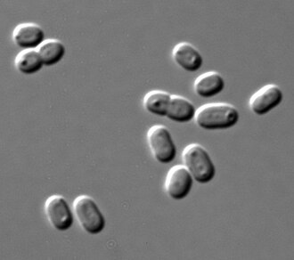
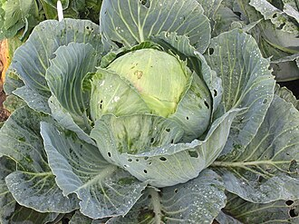
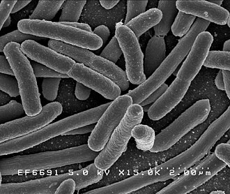
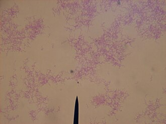
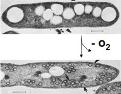
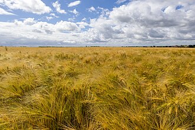

The 37 genes to order
No organism on Earth has all 23 abilities: 322 were scored and every one fell short. But no ability is missing from Earth either: for every one of them, some organism already has it. So each ability was traced back to the gene behind it. This is what came back.
37 genes · 23 jobs · 13 traits · 18 source organisms
41,445 letters of DNA, roughly $2,901–6,217 to have printed.
Nothing here is limited to one kind of organism. A gene is bought as printed DNA, so the creature it came from never has to be grown, shipped, or still alive.
What is in the order
The genes fall into two sets, one for each requirement: staying alive on Mars, and turning dirt into soil. Inside each set they are grouped by the trait they give the microbe, 13 traits in all.
Survival on Mars, 15 genes
| Trait | Genes |
|---|---|
| Survive freezing | 2 genes |
| Survive drying out | 2 genes |
| Repair radiation damage | 2 genes |
| Handle toxic chemicals | 2 genes |
| Detoxify the Mars poison | 4 genes |
| Live without oxygen | 1 gene |
| General damage control | 2 genes |
Soil enrichment, 22 genes
| Trait | Genes |
|---|---|
| Make food out of thin air | 2 genes |
| Break down dead plants | 2 genes |
| Make nitrogen fertiliser | 13 genes |
| Unlock minerals from rock | 2 genes |
| Team up with other microbes | 1 gene |
| Digest food | 2 genes |
Survival on Mars
Trait: Survive freezing
| Job | Gene | Protein | From | Size | |
|---|---|---|---|---|---|
| Keep working in the freezing cold | cspB | Cold shock protein CspB | Bacillus subtilis | 67 aa · 204 bp | |
| Stop ice from tearing the cell apart | Antifreeze protein Maxi | Pseudopleuronectes americanus | 218 aa · 657 bp |
Sequences for Cold shock protein CspB, 204 bp · P32081
Protein, 67 amino acids:
MLEGKVKWFNSEKGFGFIEVEGQDDVFVHFSAIQGEGFKTLEEGQAVSFEIVEGNRGPQAANVTKEADNA to order, 204 letters:
ATGCTCGAAGGTAAGGTCAAGTGGTTCAACTCCGAGAAGGGTTTCGGTTTCATCGAGGTCGAAGGTCAAGATGACGTTTTCGTCCACTTCTCCGCTATCCAAGGTGAGGGTTTCAAGACCTTGGAGGAAGGTCAAGCTGTTTCCTTCGAGATCGTCGAGGGTAATAGAGGTCCTCAGGCTGCTAATGTCACTAAGGAGGCTTAASequences for Antifreeze protein Maxi, 657 bp · B1P0S1
Protein, 218 amino acids:
MALSLFTVGQFIFLFWTISITEANIDPAARAAAAAAASKAAVTAADAAAAAATIAASAASVAAATAADDAAASIATINAASAAAKSIAAAAAMAAKDTAAAAASAAAAAVASAAKALETINVKAAYAAATTANTAAAAAAATATTAAAAAAAKATIDNAAAAKAAAVATAVSDAAATAATAAAVAAATLEAAAAKAAATAVSAAAAAAAAAIAFAAAPDNA to order, 657 letters:
ATGGCTTTGTCCTTGTTCACCGTCGGTCAATTCATCTTCCTCTTCTGGACCATCTCCATCACCGAAGCTAACATCGACCCTGCTGCTAGAGCTGCTGCTGCTGCTGCTGCTTCTAAAGCTGCTGTTACTGCTGCTGATGCTGCTGCTGCTGCTGCTACTATTGCTGCTTCTGCTGCTTCTGTTGCTGCTGCTACTGCTGCTGATGATGCTGCTGCTTCTATTGCTACTATCAACGCCGCTTCTGCTGCTGCTAAGTCTATCGCCGCTGCTGCTGCTATGGCTGCTAAAGATACTGCTGCTGCTGCTGCTTCTGCTGCTGCTGCTGCTGTTGCTTCTGCTGCTAAAGCTTTAGAAACCATCAACGTCAAGGCCGCCTACGCTGCTGCTACTACTGCTAATACTGCTGCTGCTGCTGCTGCTGCTACTGCTACTACTGCTGCTGCTGCTGCTGCTGCTAAAGCTACTATTGACAACGCTGCTGCTGCTAAAGCTGCTGCTGTCGCTACTGCTGTTTCTGATGCTGCTGCTACTGCTGCTACTGCTGCTGCTGTTGCTGCTGCTACTTTAGAAGCTGCTGCTGCTAAAGCTGCTGCTACTGCTGTTTCCGCTGCTGCTGCTGCTGCTGCTGCTGCTATTGCTTTTGCTGCTGCTCCTTAATrait: Survive drying out
| Job | Gene | Protein | From | Size | |
|---|---|---|---|---|---|
| Hold everything together once the water is gone | CAS31 | Dehydrin CAS31 | Medicago truncatula | 312 aa · 939 bp | |
| Make the sugar that protects it while dry | TPS1 | Alpha,alpha-trehalose-phosphate synthase [UDP-forming] | Pichia angusta | 475 aa · 1428 bp |
Sequences for Dehydrin CAS31, 939 bp · B1NY81
Protein, 312 amino acids:
MSQYQQGYGDQTRRVDEYGNPLTSQGQVDQYGNPISGGGMTGATGHGHGHHQQHHGVGVDQTTGFGSNTGTGTGYGTHTGSGGTHTGGVGGYGTTTEYGSTNTGSGYGNTDIGGTGYGTGTGTGTTGYGATGGGTGVGYGGTGHDNRGVMDKIKEKIPGTDQNASTYGTGTGYGTTGIGHQQHGGDNRGVMDKIKEKIPGTDQNQYTHGTGTGTGTGYGTTGYGASGVGHQQHGEKGVMDKIKEKIPGTEQNTYGTGTGTGHGTTGYGSTGTGHGTTGYGDEQHHGEKKGIMEKIKEKLPGTGSCTGHGQGHDNA to order, 939 letters:
ATGTCCCAATACCAGCAGGGTTACGGTGATCAAACCCGTAGAGTTGACGAATACGGCAATCCTCTCACCTCTCAGGGTCAAGTTGACCAATACGGTAACCCTATCTCCGGTGGTGGTATGACTGGTGCTACTGGTCATGGTCATGGTCATCATCAACAGCACCACGGTGTTGGTGTTGATCAGACCACTGGTTTCGGTTCTAACACTGGTACCGGTACCGGTTACGGTACTCATACTGGTTCTGGTGGTACTCATACTGGTGGTGTTGGCGGTTACGGTACTACTACTGAATACGGCTCTACCAATACCGGTTCCGGTTACGGTAACACCGATATCGGTGGTACTGGTTATGGTACTGGTACTGGCACTGGTACTACTGGCTATGGTGCTACTGGTGGTGGTACTGGTGTTGGTTATGGTGGTACTGGTCATGATAACCGTGGTGTCATGGACAAGATCAAGGAGAAGATCCCCGGTACCGATCAAAACGCTTCCACTTACGGTACTGGTACTGGTTATGGTACCACCGGCATCGGTCATCAACAACATGGTGGTGATAACCGTGGTGTTATGGATAAGATCAAGGAGAAGATCCCCGGCACCGACCAAAACCAGTACACTCACGGTACTGGTACTGGTACTGGTACTGGTTACGGCACTACTGGTTATGGTGCTTCTGGTGTTGGTCATCAGCAACACGGTGAAAAGGGTGTCATGGATAAGATCAAGGAGAAGATCCCCGGCACTGAGCAGAATACCTACGGTACCGGTACTGGTACTGGTCATGGTACTACTGGTTACGGTTCTACTGGTACTGGCCATGGTACTACCGGTTACGGTGATGAACAACACCATGGTGAAAAGAAGGGCATCATGGAGAAGATCAAGGAGAAGCTCCCCGGTACTGGTTCTTGTACTGGTCATGGTCAAGGTCATTAASequences for Alpha,alpha-trehalose-phosphate synthase [UDP-forming], 1428 bp · O94213
Protein, 475 amino acids:
MVKGNVIVVSNRIPVTIKKTEDDENGKSRYDYTMSSGGLVTALQGLKNPFRWFGWPGMSVDSEQGRQTVERDLKEKFNCYPIWLSDEIADLHYNGFSNSILWPLFHYHPGEMNFDEIAWAAYLEANKLFCQTILKEIKDGDVIWVHDYHLMLLPSLLRDQLNSKGLPNVKIGFFLHTPFPSSEIYRILPVRKEILEGVLSCDLIGFHTYDYVRHFLSSVERILKLRTSPQGVVYNDRQVTVSAYPIGIDVDKFLNGLKTDEVKSRIKQLETRFGKDCKLIIGVDRLDYIKGVPQKLHAFEIFLERHPEWIGKVVLIQVAVPSRGDVEEYQSLRAAVNELVGRINGRFGTVEFVPIHFLHKSVNFQELISVYAASDVCVVSSTRDGMNLVSYEYIACQQDRKGSLVLSEFAGAAQSLNGALVVNPWNTEELSEAIYEGLIMSEEKRRGNFQKMFKYIEKYTASYWGENFVKELTRVDNA to order, 1428 letters:
ATGGTCAAGGGTAACGTCATCGTCGTTTCCAACCGTATCCCTGTTACCATCAAGAAGACCGAGGACGATGAGAACGGTAAGTCCAGATACGACTACACCATGTCTTCTGGCGGTCTCGTTACTGCTTTGCAAGGTTTGAAGAACCCTTTCCGTTGGTTCGGCTGGCCTGGTATGTCTGTTGATTCTGAACAAGGTAGACAGACTGTCGAGCGTGACCTCAAGGAGAAGTTCAACTGCTACCCTATTTGGTTGTCCGACGAGATCGCCGATCTCCATTACAACGGTTTCTCCAACTCTATCTTGTGGCCCTTGTTCCACTACCACCCTGGTGAAATGAACTTCGACGAAATCGCTTGGGCTGCTTACTTGGAGGCTAACAAGCTCTTCTGTCAGACCATTCTCAAGGAGATCAAGGACGGCGACGTTATCTGGGTTCATGACTACCACTTGATGCTCTTGCCTTCTCTCCTCCGCGATCAACTCAACTCTAAGGGTTTGCCTAACGTTAAGATCGGCTTCTTCCTCCACACCCCTTTCCCTTCTTCTGAGATCTACAGAATCCTCCCTGTTCGTAAGGAGATCCTCGAGGGTGTTCTCTCTTGTGATTTGATCGGCTTCCACACTTACGACTACGTCCGCCACTTCTTGTCTTCCGTTGAAAGAATCCTCAAGCTCCGTACTTCCCCTCAGGGTGTTGTTTACAACGACAGACAAGTCACTGTCTCCGCTTATCCCATCGGCATCGACGTTGATAAGTTCCTCAACGGTTTGAAGACCGACGAAGTCAAGTCCCGCATCAAGCAATTGGAGACTCGTTTCGGTAAAGACTGCAAGCTCATCATCGGCGTCGACAGATTGGATTACATCAAGGGCGTTCCTCAAAAGCTCCATGCTTTCGAGATCTTCCTCGAGAGACATCCTGAGTGGATCGGTAAGGTCGTTTTGATCCAGGTTGCTGTCCCTTCTAGAGGTGATGTCGAGGAATACCAGTCTTTGCGTGCTGCTGTTAACGAGTTGGTCGGTAGAATCAACGGTCGTTTCGGTACTGTCGAGTTCGTTCCTATCCACTTCCTCCATAAGTCCGTCAACTTCCAGGAGCTCATCTCCGTTTACGCTGCTTCTGACGTTTGTGTCGTTTCTTCCACCCGTGATGGTATGAACCTCGTCTCTTACGAGTACATCGCCTGTCAACAAGACCGCAAGGGTTCTTTGGTCTTGTCTGAGTTCGCTGGTGCTGCTCAATCTTTGAACGGCGCTTTAGTCGTTAACCCTTGGAACACCGAGGAGCTCTCTGAAGCTATTTACGAGGGTCTCATTATGTCCGAGGAAAAGCGCCGCGGTAACTTCCAAAAAATGTTCAAGTACATCGAGAAGTACACCGCCTCCTACTGGGGCGAGAACTTTGTTAAGGAATTGACCAGAGTTTAATrait: Repair radiation damage
| Job | Gene | Protein | From | Size | |
|---|---|---|---|---|---|
| Put a shield around the DNA | dps | DNA protection during starvation protein |  |
Synechococcus elongatus | 176 aa · 531 bp |
| Mend the DNA that gets broken anyway | irrE | Radiation response metalloprotease IrrE | Deinococcus deserti | 281 aa · 846 bp |
Sequences for DNA protection during starvation protein, 531 bp · Q55024
Protein, 176 amino acids:
MTNTGLVQSFSQIEPNVLGLETSVTSQICEGLNRALASFQVLYLQYQKHHFTVQGAEFYSLHEFFEDSYGSVKDHVHDLGERLNGLGGVPVAHPLKLAELTCFAIEEDGVFNCRTMLEHDLAAEQAILSLLRRLTAQVESLGDRATRYLLEGILLKTEERAYHIAHFLAPDSLKLADNA to order, 531 letters:
ATGACCAACACCGGTTTGGTTCAGTCTTTCTCCCAGATCGAGCCTAACGTTTTGGGTTTGGAGACCTCCGTTACTTCTCAAATCTGCGAGGGCTTGAACAGAGCTTTGGCTTCTTTCCAGGTCTTGTACTTGCAATACCAGAAGCACCACTTCACCGTCCAGGGTGCTGAATTCTACTCTCTCCATGAATTCTTCGAGGACTCTTACGGCTCCGTCAAGGACCATGTTCACGACTTGGGTGAAAGATTGAACGGTTTGGGTGGCGTTCCTGTCGCTCATCCTTTAAAGCTCGCTGAATTAACCTGTTTCGCCATCGAGGAGGACGGCGTTTTCAATTGCCGTACCATGTTAGAACATGACCTCGCTGCTGAGCAGGCCATTTTGTCTCTCTTGCGTAGATTGACTGCTCAAGTCGAGTCCCTCGGTGACAGAGCTACTAGATACTTGTTGGAAGGTATCCTCCTCAAGACCGAGGAGCGTGCTTACCATATCGCTCATTTCTTGGCTCCTGATTCTTTGAAGCTCGCCTAASequences for Radiation response metalloprotease IrrE, 846 bp · C1CZ84
Protein, 281 amino acids:
MTDPAPPPTALAAAKARMRELAASYGAGLPGRDTHSLMHGLDGITLTFMPMGQRDGAYDPEHHVILINSQVRPERQRFTLAHEISHALLLGDDDLLSDLHDEYEGDRLEQVIETLCNVGAAALLMPAELIDDLLTRFGPTGRALAELARRADVSATSALYALAERTAPPVIYAVCALSRQEDEGEGGGAKELTVRASSASAGVKYSLSAGTPVPDDHPAALALDTRLPLAQDSYVPFRSGRRMPAYVDAFPERQRVLVSFALPAGRSEPDADKPEAPGDQSDNA to order, 846 letters:
ATGACCGATCCTGCTCCTCCTCCTACTGCTTTAGCTGCTGCTAAAGCTAGAATGCGTGAACTCGCTGCTTCCTACGGTGCTGGTTTACCTGGTAGAGATACTCATTCCTTGATGCACGGTCTCGACGGTATCACCTTGACCTTCATGCCTATGGGTCAAAGAGATGGTGCTTACGACCCTGAACACCATGTCATCCTCATCAACTCCCAAGTCAGACCTGAACGTCAGCGTTTCACCTTGGCTCATGAAATCTCTCACGCTTTGCTCCTCGGTGATGACGATTTGCTCTCCGACTTGCATGATGAATACGAGGGTGACCGTCTCGAACAGGTTATCGAAACCCTCTGCAACGTTGGTGCTGCTGCTTTACTCATGCCTGCTGAATTGATTGACGACCTCCTCACTCGTTTCGGCCCTACTGGTAGAGCTTTGGCTGAATTAGCTAGACGTGCTGATGTTTCCGCCACTTCCGCTTTGTACGCTCTCGCTGAAAGAACTGCTCCTCCTGTTATTTACGCTGTCTGCGCTTTGTCCCGTCAGGAAGATGAAGGTGAGGGTGGTGGTGCTAAAGAATTGACTGTTCGCGCTTCCTCTGCTTCTGCTGGTGTTAAGTACTCCCTCTCTGCTGGTACTCCTGTTCCTGATGATCACCCTGCTGCTTTAGCTTTGGATACCCGTTTGCCTCTCGCTCAAGATTCTTACGTCCCCTTCAGATCTGGTAGACGTATGCCTGCTTACGTCGACGCTTTTCCTGAACGTCAAAGAGTCTTGGTCTCTTTCGCCTTGCCTGCTGGTAGATCTGAGCCTGATGCTGATAAACCTGAAGCTCCTGGTGATCAGTCCTAATrait: Handle toxic chemicals
| Job | Gene | Protein | From | Size | |
|---|---|---|---|---|---|
| Catch the first burning chemical | SODCC | Superoxide dismutase [Cu-Zn] |  |
Brassica oleracea var. capitata | 152 aa · 459 bp |
| Destroy the second one before it burns the cell | katA | Vegetative catalase | Bacillus subtilis | 483 aa · 1452 bp |
Sequences for Superoxide dismutase [Cu-Zn], 459 bp · P09678
Protein, 152 amino acids:
MAKGVAVLNSSEGVKGTIFFTHEGNGATTVTGTVSGLRPGLHGFHVHALGDNTNGCMSTGPHFNPDGKTHGAPEDANRHAGDLGNIIVGDDGTATFTITDSQIPLSGPNSIVGRAIVVHADPDDLGKGGHELSLSTGNAGGRVACGIIGLQGDNA to order, 459 letters:
ATGGCTAAGGGTGTTGCTGTTCTCAACTCCTCTGAGGGTGTTAAGGGTACTATCTTCTTCACCCACGAGGGTAACGGTGCTACTACCGTCACTGGTACTGTTTCTGGTTTACGTCCTGGTTTGCACGGTTTCCATGTCCACGCTTTGGGTGATAACACTAACGGTTGCATGTCCACCGGTCCTCATTTCAACCCTGACGGTAAAACTCATGGTGCTCCTGAAGATGCCAACCGCCATGCTGGTGATTTGGGTAATATCATCGTCGGTGACGATGGTACTGCTACCTTCACCATCACCGACTCTCAAATTCCTCTCTCCGGTCCTAATTCCATCGTCGGTAGAGCTATCGTCGTCCATGCTGATCCTGATGACTTGGGTAAAGGTGGTCATGAGTTGTCCCTCTCCACTGGTAACGCTGGTGGTAGAGTTGCTTGTGGTATTATCGGTCTCCAAGGTTAASequences for Vegetative catalase, 1452 bp · P26901
Protein, 483 amino acids:
MSSNKLTTSWGAPVGDNQNSMTAGSRGPTLIQDVHLLEKLAHFNRERVPERVVHAKGAGAHGYFEVTNDVTKYTKAAFLSEVGKRTPLFIRFSTVAGELGSADTVRDPRGFAVKFYTEEGNYDIVGNNTPVFFIRDAIKFPDFIHTQKRDPKTHLKNPTAVWDFWSLSPESLHQVTILMSDRGIPATLRHMHGFGSHTFKWTNAEGEGVWIKYHFKTEQGVKNLDVNTAAKIAGENPDYHTEDLFNAIENGDYPAWKLYVQIMPLEDANTYRFDPFDVTKVWSQKDYPLIEVGRMVLDRNPENYFAEVEQATFSPGTLVPGIDVSPDKMLQGRLFAYHDAHRYRVGANHQALPINRARNKVNNYQRDGQMRFDDNGGGSVYYEPNSFGGPKESPEDKQAAYPVQGIADSVSYDHYDHYTQAGDLYRLMSEDERTRLVENIVNAMKPVEKEEIKLRQIEHFYKADPEYGKRVAEGLGLPIKKDSDNA to order, 1452 letters:
ATGTCCTCTAACAAGCTCACCACCTCTTGGGGTGCTCCTGTTGGTGATAATCAAAACTCCATGACCGCTGGTTCTAGAGGCCCTACCCTCATCCAGGATGTTCATTTATTGGAAAAGCTCGCCCATTTCAACCGCGAGCGCGTCCCTGAAAGAGTTGTTCATGCTAAAGGTGCTGGTGCTCATGGTTACTTCGAGGTCACCAACGACGTTACTAAGTACACCAAGGCCGCTTTCTTGTCTGAGGTCGGTAAGCGTACCCCTTTATTTATCCGTTTCTCCACCGTCGCTGGTGAACTCGGTTCTGCTGACACTGTTAGAGATCCTAGAGGTTTCGCTGTCAAGTTCTACACCGAGGAGGGTAACTACGACATCGTTGGTAACAACACCCCTGTTTTCTTCATCCGCGACGCTATCAAGTTCCCCGATTTCATCCATACCCAGAAGAGAGATCCTAAGACCCACCTCAAGAACCCCACTGCTGTTTGGGATTTCTGGTCTTTGTCTCCTGAGTCCTTGCATCAGGTCACCATCTTGATGTCCGATCGTGGTATTCCTGCTACTCTCCGTCATATGCACGGTTTCGGTTCTCACACTTTCAAGTGGACCAACGCTGAGGGTGAAGGTGTTTGGATCAAGTACCACTTCAAGACTGAGCAGGGTGTCAAGAACCTCGACGTTAACACCGCTGCTAAAATCGCTGGTGAAAACCCCGATTACCACACCGAGGATTTATTCAACGCCATCGAGAACGGCGATTACCCCGCTTGGAAACTCTACGTTCAAATTATGCCCCTCGAAGACGCCAATACCTACCGCTTCGACCCTTTCGATGTTACTAAAGTCTGGTCCCAGAAGGATTACCCCCTCATCGAGGTCGGTAGAATGGTTTTAGATCGTAACCCCGAGAATTACTTCGCCGAGGTCGAGCAGGCTACTTTTTCTCCTGGTACTCTCGTTCCTGGTATTGACGTCTCCCCTGACAAGATGTTACAGGGTAGACTCTTCGCTTACCACGATGCTCATCGCTACCGTGTTGGTGCTAATCATCAGGCTTTGCCTATCAACCGTGCTAGAAACAAGGTCAACAACTACCAGCGCGACGGTCAAATGAGATTCGACGACAACGGTGGTGGTTCTGTTTATTACGAGCCCAACTCCTTCGGTGGTCCTAAAGAGTCCCCTGAAGACAAACAAGCTGCTTACCCTGTTCAGGGTATCGCTGATTCTGTCTCCTACGACCATTACGACCATTACACCCAGGCTGGTGATCTCTATCGTTTGATGTCCGAGGATGAGCGTACTAGACTCGTCGAGAACATCGTCAACGCTATGAAACCCGTCGAAAAGGAGGAAATCAAGCTCCGCCAAATCGAGCACTTCTACAAGGCCGACCCTGAATACGGTAAAAGAGTCGCCGAAGGTTTGGGTTTACCTATCAAGAAGGACTCCTAATrait: Detoxify the Mars poison
| Job | Gene | Protein | From | Size | |
|---|---|---|---|---|---|
| Break down the poison in the Mars dust | pcrA | Perchlorate reductase subunit alpha | Dechloromonas aromatica | 927 aa · 2784 bp | |
| Break down the poison in the Mars dust | pcrB | Perchlorate reductase subunit beta | Dechloromonas aromatica | 333 aa · 1002 bp | |
| Break down the poison in the Mars dust | pcrC | Perchlorate reductase subunit gamma | Dechloromonas aromatica | 236 aa · 711 bp | |
| Finish the poison off, and get oxygen back | Daro_2580 | Chlorite dismutase | Dechloromonas aromatica | 282 aa · 849 bp |
- Perchlorate reductase subunit alpha: the working part of a machine
- Perchlorate reductase subunit beta: another chain of the same complex
- Perchlorate reductase subunit gamma: another chain of the same complex
Sequences for Perchlorate reductase subunit alpha, 2784 bp · Q47CW6
Protein, 927 amino acids:
MVQMTRRGFLLASGATLLGSSLSFRTLAAAADLSGAFEYSGWENFHRAQWSWDKKTRGAHLINCTGACPHFVYSKEGVVIREEQSKDIAPMTGIPEYNPRGCNKGECAHDYMYGPHRLKYPLIRVGERGEGKWRRASWDEALDMIADKVVDTIKNHAPDCISVYSPVPAVAPVSFSAGHRFAHYIGAHTHTFFDWYGDHPTGQTQTCGVQGDTAETADWFNSKYIILWGANPTQTRIPDAHFLSEAQLNGTKIVSIAPDFNSSAIKVDKWIHPQPGTDGALALSMAHVIIKEKLYDAHNLKEQTDLSYLVRSDTKRFLREADVVAGGSKDKFYLWDVRTGKPVIPKGCWGDQPEQKAPPVAFMGRNTNTFPKGYIDLGDIDPALEGKFKIQLLDGKSIEVRPVFEILKSRIMADNTPEKAAKITGVPAKSITELAREYATAKPSMIICGGGTQHWYYSDVLLRAMHLLTALTGSEGKNGGGLNHYIGQWKPTFLPGLVALAFPEGPAKQRFCQTTIWTYIHAEVNDQILNSDVDTEKYLREAFASRQMPNLPRDGRDPKVFIIYRGNWLNQAKGQKYVLRNLWPKLELVVDINIRMDSTALYSDVVLPSAHWYEKLDLNVTEEHTFINMTEPAIKPMWESKTDWQIFLALSKRVEMAANRKGYQKFNDEQFKWVRNLSNLWNQMTMDGKLAEDAAAAQYILDNAPHSKGITLDMLREKPQRFKANWTSSMKEGVPYTPFQNFVVDKKPWPTLTGRQQFYLDHETFFDMGVELPVYKAPIDADKYPFRFNSPHSRHSIHSTFKDSVLMLRLQRGGPSIDISSIDAKTLGIKDNDWVEVWNDHGKVICRVKIRSGEQRGRVSMWHTPELYMDLIEGGSQSVCPVRITPTHLVGNYGHLVFRPNYYGPGGTQRDVRVNMKRYIGATPMSFDNA to order, 2784 letters:
ATGGTCCAAATGACCCGTCGTGGTTTTCTCTTGGCTTCTGGTGCTACTTTGCTCGGTTCTTCTCTCTCCTTCCGTACTTTGGCTGCTGCTGCTGATTTATCCGGTGCTTTTGAGTACTCCGGTTGGGAAAACTTCCACCGCGCTCAATGGTCTTGGGATAAAAAGACTCGCGGTGCTCATTTAATCAACTGCACCGGCGCTTGTCCCCATTTTGTTTACTCCAAGGAGGGTGTTGTTATTCGTGAGGAGCAGTCCAAGGACATCGCTCCTATGACTGGTATCCCTGAATATAACCCCCGTGGTTGTAACAAGGGCGAGTGTGCTCATGATTACATGTACGGTCCTCACCGTTTGAAGTACCCTCTCATCCGCGTCGGTGAAAGAGGTGAAGGTAAATGGAGAAGAGCTTCTTGGGATGAGGCCCTCGACATGATCGCTGATAAGGTTGTTGATACCATCAAGAACCACGCCCCCGACTGTATCTCCGTCTATTCCCCTGTTCCTGCTGTTGCTCCTGTTTCTTTCTCCGCTGGTCATAGATTTGCCCACTACATCGGCGCTCATACCCATACTTTTTTCGACTGGTACGGTGATCACCCTACTGGTCAGACCCAAACCTGTGGTGTTCAAGGTGATACTGCTGAAACCGCTGATTGGTTCAACTCCAAGTACATCATCCTCTGGGGTGCTAACCCTACCCAGACTAGAATCCCTGATGCTCATTTTCTCTCTGAGGCCCAACTCAACGGCACTAAGATCGTCTCCATCGCTCCTGATTTTAACTCCTCCGCTATCAAGGTCGACAAGTGGATCCACCCTCAGCCTGGTACTGATGGTGCTTTAGCTTTATCCATGGCTCATGTCATCATCAAGGAGAAGCTCTACGACGCCCACAACTTAAAGGAGCAGACCGATTTGTCTTACCTCGTCAGATCCGACACCAAGCGTTTTCTCCGTGAAGCCGATGTTGTTGCTGGTGGTTCTAAGGATAAGTTCTACCTCTGGGACGTCCGCACTGGTAAACCTGTCATCCCTAAGGGTTGTTGGGGTGATCAACCTGAACAGAAGGCTCCTCCTGTTGCTTTTATGGGTAGAAACACCAACACCTTCCCCAAGGGTTACATCGACCTCGGTGATATCGATCCTGCTTTAGAAGGTAAGTTCAAGATCCAGCTCCTCGACGGCAAGTCCATCGAGGTTAGACCTGTTTTTGAAATCCTCAAGTCCCGCATCATGGCCGACAACACCCCTGAAAAGGCTGCTAAAATTACTGGTGTCCCTGCTAAGTCCATCACCGAGCTCGCTAGAGAGTACGCTACTGCTAAACCTTCTATGATCATCTGCGGCGGTGGTACTCAGCATTGGTACTACTCCGATGTTTTGTTGAGAGCTATGCACCTCCTCACCGCCTTAACCGGTTCTGAGGGTAAAAATGGTGGTGGTTTAAACCACTACATCGGCCAGTGGAAGCCCACCTTCTTACCTGGTTTGGTTGCTTTAGCTTTTCCTGAGGGTCCTGCTAAGCAGCGTTTCTGCCAAACCACTATCTGGACTTATATCCACGCCGAGGTTAACGACCAGATCCTCAACTCCGATGTTGACACTGAAAAGTACCTCCGCGAAGCTTTCGCTTCCAGACAAATGCCCAACTTGCCTAGAGATGGTAGAGACCCTAAGGTCTTCATCATCTACCGCGGTAACTGGTTGAACCAGGCTAAGGGTCAAAAGTACGTCTTGAGAAACCTCTGGCCTAAGCTCGAGCTCGTTGTCGACATTAACATCCGTATGGATTCCACTGCCTTGTACTCCGACGTCGTCCTCCCTTCTGCTCATTGGTATGAAAAACTCGACTTGAACGTCACCGAGGAGCACACCTTCATCAACATGACCGAACCTGCTATTAAGCCTATGTGGGAGTCCAAGACCGACTGGCAAATTTTCCTCGCCTTGTCTAAGAGAGTTGAGATGGCCGCTAACCGTAAGGGTTATCAGAAGTTCAACGACGAGCAGTTCAAGTGGGTCCGTAACCTCTCCAACTTGTGGAATCAAATGACCATGGACGGTAAGCTCGCCGAAGACGCTGCTGCTGCTCAATATATTTTAGACAACGCCCCTCATTCCAAGGGCATCACCCTCGACATGCTCAGAGAAAAACCTCAACGTTTCAAGGCTAACTGGACCTCCTCCATGAAGGAGGGCGTTCCTTATACTCCTTTTCAGAACTTCGTCGTCGACAAGAAGCCCTGGCCCACTTTGACTGGTAGACAACAATTTTACCTCGACCACGAAACCTTCTTCGACATGGGCGTCGAGCTCCCTGTTTATAAAGCTCCTATCGATGCTGATAAGTACCCCTTCCGCTTCAACTCCCCCCATTCTAGACATTCCATCCACTCTACTTTCAAGGACTCCGTCTTGATGCTCCGCTTGCAGAGAGGTGGTCCTTCTATTGATATCTCTTCCATCGACGCTAAGACCCTCGGTATCAAGGACAACGACTGGGTTGAAGTTTGGAACGACCATGGTAAGGTCATCTGCCGTGTTAAGATCCGCTCCGGTGAACAAAGAGGTAGAGTTTCCATGTGGCACACCCCTGAATTATACATGGACCTCATCGAGGGTGGTTCTCAATCTGTCTGCCCCGTCAGAATTACTCCTACTCATCTCGTCGGTAACTACGGTCATTTGGTCTTCCGCCCTAATTACTACGGCCCTGGTGGTACTCAAAGAGACGTTAGAGTTAACATGAAGCGCTACATCGGCGCCACCCCTATGTCTTTCTAASequences for Perchlorate reductase subunit beta, 1002 bp · Q47CW7
Protein, 333 amino acids:
MANVMKAPKRQLTYVTDLNKCIGCQTCTVACKKLWTTGPGQDFMYWRNVETTPGLGYPRNWQTKGGGYKNGELQKGKIPPMIDYGIPFEFDYAGRLFEGKKERVRPSPTPRSAPNWDEDQGAGEYPNNSFFYLPRMCNHCTKPACLEACPNEAIYKREQDGIVVIHQDKCKGAQACVQSCPYAKPYFNPVANKANKCIGCFPRIEQGVAPGCVAQCVGRAMHVGFIDDTNSSVHKLIRLYKVALPLHPEFGTEPNVFYVPPVLGPRMELPNGELSTDPKIPLAQLEGLFGKQVRDVLAILQTEREKKMKGLASDLMDVLIGRRSADMMISPLTDNA to order, 1002 letters:
ATGGCTAACGTCATGAAGGCTCCTAAGCGTCAACTCACTTACGTCACCGATCTCAACAAGTGCATCGGTTGCCAAACCTGCACTGTTGCTTGTAAGAAGCTCTGGACTACTGGTCCTGGTCAGGATTTCATGTACTGGCGTAACGTTGAGACTACCCCTGGTTTGGGTTACCCCAGAAATTGGCAAACCAAGGGTGGTGGTTATAAGAACGGCGAGTTGCAGAAGGGTAAAATCCCTCCTATGATCGACTACGGTATCCCTTTCGAGTTCGACTACGCCGGTAGATTGTTCGAAGGTAAGAAGGAGCGTGTTCGTCCTTCTCCTACTCCCAGATCTGCTCCTAATTGGGATGAAGACCAGGGTGCTGGTGAATATCCTAACAACTCCTTCTTCTACCTCCCCAGAATGTGCAACCACTGCACCAAGCCTGCTTGTTTAGAAGCTTGTCCTAACGAGGCTATCTACAAGCGCGAGCAGGACGGTATTGTTGTTATCCACCAAGACAAGTGCAAGGGTGCTCAGGCTTGCGTCCAATCTTGTCCTTATGCTAAGCCTTATTTCAACCCCGTCGCCAACAAGGCCAACAAGTGCATCGGTTGTTTCCCTAGAATTGAACAGGGCGTCGCTCCTGGTTGTGTTGCTCAATGTGTTGGTAGAGCTATGCATGTTGGCTTCATCGACGACACCAACTCCTCTGTCCATAAGCTCATCCGTTTGTACAAGGTCGCTCTCCCTTTGCATCCTGAGTTCGGTACTGAACCTAACGTTTTCTACGTCCCCCCTGTTCTCGGTCCTAGAATGGAACTCCCTAATGGTGAATTATCCACCGACCCCAAGATCCCCTTGGCTCAATTGGAGGGTTTATTCGGTAAACAAGTCCGCGACGTTCTCGCTATCCTCCAAACCGAGAGAGAAAAGAAGATGAAGGGTCTCGCCTCTGACTTGATGGACGTTCTCATCGGCAGAAGATCTGCTGATATGATGATCTCCCCCTTGACCTAASequences for Perchlorate reductase subunit gamma, 711 bp · Q47CW8
Protein, 236 amino acids:
MIKILALATLLISGFLPGVTVAQQAEYLGFRACTKCHDSQGETWRASAHAKAFDSLKPNAKSEAKTKAKLDPKKDYTQDKNCVGCHVTGYGEPGGFVSGASLDDMKTLVGVTCESCHGAGGKFRNLHGEASDRLKNQGETSERKQLVTAGQNFDMEKACARCHLNFEGSTKHDAKAPFTPFSPSVGSKYQFDFQKSVMTTGAGNPIHTHFKLRGVFKGDPVPAVRAKLQEDAPEPEDNA to order, 711 letters:
ATGATCAAGATCCTCGCCTTGGCTACTCTCTTGATCTCCGGTTTCCTCCCTGGTGTTACTGTTGCTCAACAGGCTGAATACTTGGGTTTCCGTGCTTGCACCAAGTGTCACGATTCCCAAGGTGAGACTTGGAGAGCTTCTGCTCATGCTAAGGCTTTCGACTCTCTCAAGCCTAACGCTAAGTCCGAAGCTAAGACCAAGGCTAAGCTCGATCCTAAGAAGGACTACACCCAAGACAAGAACTGCGTCGGTTGTCACGTCACTGGTTATGGTGAACCTGGTGGTTTTGTTTCTGGCGCTTCTCTCGACGATATGAAGACCCTCGTTGGTGTCACTTGTGAATCTTGCCACGGTGCTGGTGGTAAATTTCGCAACCTCCACGGTGAAGCTTCTGATAGACTCAAGAACCAGGGCGAAACTTCTGAGCGTAAGCAGCTCGTTACCGCTGGTCAAAATTTCGACATGGAGAAGGCTTGCGCTAGATGCCACTTAAACTTCGAGGGCTCTACTAAGCACGATGCTAAGGCCCCTTTTACCCCTTTTTCTCCTTCCGTCGGTTCTAAGTACCAGTTCGACTTCCAGAAGTCCGTCATGACTACTGGCGCTGGTAATCCTATCCATACCCATTTCAAGCTCCGCGGTGTTTTTAAGGGCGACCCTGTTCCTGCTGTTAGAGCTAAATTGCAGGAGGACGCTCCTGAACCTGAATAASequences for Chlorite dismutase, 849 bp · Q47CX0
Protein, 282 amino acids:
MTNLSIHNFKLSLVAAVIGSAMVMTSSPVAAQQAMQPMQSMKIERGTILTQPGVFGVFTMFKLRPDWNKVPVAERKGAAEEVKKLIEKHKDNVLVDLYLTRGLETNSDFFFRINAYDLAKAQTFMREFRSTTVGKNADVFETLVGVTKPLNYISKDKSPGLNAGLSSATYSGPAPRYVIVIPVKKNAEWWNMSPEERLKEMEVHTTPTLAYLVNVKRKLYHSTGLDDTDFITYFETDDLTAFNNLMLSLAQVKENKFHVRWGSPTTLGTIHSPEDVIKALADDNA to order, 849 letters:
ATGACCAACCTCTCTATCCACAACTTCAAGCTCTCCCTCGTCGCTGCTGTTATTGGTTCCGCTATGGTTATGACTTCTTCCCCTGTCGCTGCTCAGCAGGCTATGCAACCTATGCAATCTATGAAAATCGAGCGCGGTACCATCCTCACCCAGCCTGGTGTTTTCGGTGTTTTTACTATGTTCAAGCTCCGCCCTGATTGGAACAAGGTCCCCGTCGCTGAAAGAAAAGGTGCTGCTGAAGAAGTCAAAAAGCTCATCGAGAAGCACAAGGACAACGTCCTCGTCGACCTCTACTTGACTAGAGGTTTGGAAACCAACTCCGATTTCTTCTTCCGCATCAACGCCTACGACCTCGCTAAGGCTCAAACTTTCATGAGAGAATTCCGCTCTACCACCGTCGGTAAGAACGCCGACGTTTTTGAAACTCTCGTTGGTGTTACTAAGCCCCTCAACTACATCTCCAAGGACAAGTCCCCTGGTTTGAACGCTGGTTTATCCTCCGCTACTTATTCCGGTCCTGCTCCTAGATACGTTATCGTCATCCCTGTTAAGAAGAACGCTGAGTGGTGGAACATGTCCCCCGAAGAAAGACTCAAGGAAATGGAAGTCCACACTACCCCTACTTTGGCCTACCTCGTTAACGTCAAGAGAAAGCTCTACCACTCTACCGGTTTGGACGACACCGACTTTATCACCTACTTCGAGACTGACGATTTGACCGCTTTCAACAACCTCATGCTCTCCCTCGCTCAAGTTAAGGAGAACAAGTTCCACGTCAGATGGGGTTCTCCTACCACCCTCGGTACTATTCATTCTCCTGAAGACGTTATCAAGGCCCTCGCTGATTAATrait: Live without oxygen
| Job | Gene | Protein | From | Size | |
|---|---|---|---|---|---|
| Make energy with no air | fccA | Fumarate reductase | Shewanella frigidimarina | 571 aa · 1719 bp |
Sequences for Fumarate reductase, 1719 bp · P0C278
Protein, 571 amino acids:
ADNLAEFHVQNQECDSCHTPDGELSNDSLTYENTQCVSCHGTLEEVAETTKHEHYNAHASHFPGEVACTSCHSAHEKSMVYCDSCHSFDFNMPYAKKWQRDEPTIAELAKDKSERQAALASAPHDTVDVVVVGSGGAGFSAAISATDSGAKVILIEKEPVIGGNAKLAAGGMNAAWTDQQKAKKITDSPELMFEDTMKGGQNINDPALVKVLSSHSKDSVDWMTAMGADLTDVGMMGGASVNRAHRPTGGAGVGAHVVQVLYDNAVKRNIDLRMNTRGIEVLKDDKGTVKGILVKGMYKGYYWVKADAVILATGGFAKNNERVAKLDPSLKGFISTNQPGAVGDGLDVAENAGGALKDMQYIQAHPTLSVKGGVMVTEAVRGNGAILVNREGKRFVNEITTRDKASAAILAQTGKSAYLIFDDSVRKSLSKIDKYIGLGVAPTADSLVKLGKMEGIDGKALTETVARYNSLVSSGKDTDFERPNLPRALNEGNYYAIEVTPGVHHTMGGVMIDTKAEVMNAKKQVIPGLYGAGEVTGGVHGANRLGGNAISDIITFGRLAGEEAAKYSKKNDNA to order, 1719 letters:
ATGGCTGATAACCTCGCTGAATTCCACGTTCAGAACCAGGAATGCGATTCCTGCCACACTCCTGATGGTGAATTGTCCAACGATTCCCTCACTTACGAAAACACCCAGTGCGTCTCCTGCCATGGTACTTTGGAAGAGGTTGCTGAAACTACTAAGCACGAGCACTACAACGCCCACGCTTCTCATTTCCCTGGTGAAGTTGCTTGTACTTCCTGTCATTCCGCCCACGAAAAGTCTATGGTCTACTGCGACTCTTGTCATTCCTTCGATTTCAACATGCCCTACGCCAAGAAGTGGCAGCGTGATGAGCCTACTATCGCTGAATTAGCTAAGGACAAGTCCGAACGCCAGGCTGCTTTGGCTTCTGCTCCTCATGATACTGTTGATGTTGTCGTTGTCGGCTCCGGTGGTGCTGGTTTTTCCGCTGCTATTTCTGCTACTGATTCTGGTGCTAAGGTCATCCTCATCGAGAAGGAGCCCGTTATCGGTGGTAATGCTAAGTTGGCTGCTGGTGGTATGAATGCTGCTTGGACTGACCAGCAAAAGGCTAAAAAGATCACCGACTCCCCTGAACTCATGTTCGAGGACACCATGAAGGGTGGTCAAAATATCAACGACCCCGCTTTGGTTAAGGTCCTCTCCTCTCACTCCAAGGATTCTGTTGATTGGATGACCGCCATGGGTGCTGATTTGACCGATGTCGGTATGATGGGTGGTGCTTCTGTTAACCGTGCTCACAGACCTACTGGTGGTGCTGGTGTTGGTGCTCATGTTGTTCAAGTTCTCTACGACAACGCTGTCAAGCGCAACATCGACCTCCGTATGAACACTAGAGGTATCGAAGTCCTCAAGGACGACAAGGGTACCGTCAAGGGTATTTTGGTCAAGGGTATGTACAAGGGCTACTACTGGGTCAAGGCCGACGCTGTTATTTTGGCTACTGGTGGTTTTGCTAAGAACAACGAGCGCGTCGCCAAGTTGGATCCTTCTTTGAAGGGTTTCATCTCTACTAACCAGCCCGGCGCTGTTGGTGATGGTTTAGATGTCGCTGAAAATGCTGGTGGTGCTTTGAAGGACATGCAGTACATCCAGGCTCACCCTACTTTATCCGTCAAGGGTGGTGTTATGGTCACTGAAGCTGTCCGTGGTAACGGTGCTATTTTGGTCAACCGCGAAGGTAAACGTTTCGTCAACGAGATCACCACCCGTGATAAGGCTTCTGCCGCTATTTTGGCTCAAACTGGTAAGTCTGCTTACCTCATCTTCGACGACTCCGTCAGAAAGTCCTTGTCCAAGATCGACAAGTACATCGGTCTCGGTGTTGCCCCTACTGCTGATTCTTTGGTTAAGCTCGGTAAAATGGAGGGCATCGACGGCAAGGCTCTCACTGAAACTGTTGCTAGATACAATTCCCTCGTCTCCTCCGGTAAGGACACCGACTTTGAGAGACCTAATTTGCCTAGAGCTTTGAACGAGGGCAACTACTACGCCATCGAGGTCACTCCTGGTGTTCATCATACTATGGGTGGTGTTATGATCGACACCAAGGCCGAGGTCATGAACGCTAAAAAGCAGGTCATCCCTGGTTTATACGGTGCTGGCGAGGTTACTGGTGGTGTTCATGGTGCTAATCGTTTGGGTGGTAATGCTATCTCCGACATCATCACCTTCGGCCGTTTGGCTGGTGAAGAAGCTGCTAAATATTCCAAGAAGAACTAATrait: General damage control
| Job | Gene | Protein | From | Size | |
|---|---|---|---|---|---|
| Grab broken proteins before they stick together | ibpA | Small heat shock protein IbpA |  |
Escherichia coli | 137 aa · 414 bp |
| Fold them back into shape | dnaK | Chaperone protein DnaK | Bacillus subtilis | 611 aa · 1836 bp |
Sequences for Small heat shock protein IbpA, 414 bp · P0C054
Protein, 137 amino acids:
MRNFDLSPLYRSAIGFDRLFNHLENNQSQSNGGYPPYNVELVDENHYRIAIAVAGFAESELEITAQDNLLVVKGAHADEQKERTYLYQGIAERNFERKFQLAENIHVRGANLVNGLLYIDLERVIPEAKKPRRIEINDNA to order, 414 letters:
ATGCGTAACTTCGACCTCTCTCCTTTGTACCGTTCCGCTATCGGTTTCGATCGTTTGTTCAACCACCTCGAGAACAACCAGTCTCAGTCCAACGGTGGTTACCCTCCTTATAACGTCGAGTTGGTTGACGAAAACCACTACCGCATCGCTATCGCCGTTGCTGGTTTTGCTGAATCTGAGTTAGAGATCACCGCTCAGGATAACCTCCTCGTCGTCAAGGGTGCTCATGCTGATGAACAAAAGGAGCGTACTTACCTCTACCAGGGTATCGCCGAGAGAAACTTCGAGAGAAAGTTCCAGTTGGCTGAAAACATCCACGTCCGCGGTGCTAATCTCGTTAACGGTTTGTTGTACATCGACTTGGAGCGTGTCATCCCCGAGGCTAAGAAACCTAGAAGAATCGAAATCAACTAASequences for Chaperone protein DnaK, 1836 bp · P17820
Protein, 611 amino acids:
MSKVIGIDLGTTNSCVAVLEGGEPKVIANAEGNRTTPSVVAFKNGERQVGEVAKRQSITNPNTIMSIKRHMGTDYKVEIEGKDYTPQEVSAIILQHLKSYAESYLGETVSKAVITVPAYFNDAERQATKDAGKIAGLEVERIINEPTAAALAYGLDKTDEDQTILVYDLGGGTFDVSILELGDGVFEVRSTAGDNRLGGDDFDQVIIDHLVSEFKKENGIDLSKDKMALQRLKDAAEKAKKDLSGVSSTQISLPFITAGEAGPLHLELTLTRAKFEELSSHLVERTMGPVRQALQDAGLSASEIDKVILVGGSTRIPAVQEAIKKETGKEAHKGVNPDEVVALGAAIQGGVITGDVKDVVLLDVTPLSLGIETMGGVFTKLIDRNTTIPTSKSQVFSTAADNQTAVDIHVLQGERPMSADNKTLGRFQLTDIPPAPRGVPQIEVSFDIDKNGIVNVRAKDLGTGKEQNITIKSSSGLSDEEIERMVKEAEENADADAKKKEEIEVRNEADQLVFQTEKTLKDLEGKVDEEQVKKANDAKDALKAAIEKNEFEEIKAKKDELQTIVQELSMKLYEEAAKAQQAQGGANAEGKADDNVVDAEYEEVNDDQNKKDNA to order, 1836 letters:
ATGTCCAAGGTCATCGGTATCGACTTGGGTACTACCAACTCCTGTGTCGCTGTTTTGGAGGGTGGTGAACCTAAAGTCATCGCTAACGCTGAAGGTAACCGCACTACTCCTTCCGTCGTTGCTTTTAAGAACGGTGAGCGTCAAGTTGGTGAGGTTGCTAAGCGCCAGTCTATCACTAATCCTAACACCATCATGTCCATCAAGCGCCACATGGGCACCGATTACAAGGTTGAAATCGAGGGTAAAGACTACACCCCCCAAGAGGTCTCCGCTATTATCCTCCAACATCTCAAGTCTTACGCTGAGTCCTACCTCGGTGAGACCGTTTCTAAGGCTGTTATCACTGTTCCTGCTTACTTCAACGACGCCGAGCGCCAAGCTACTAAGGATGCTGGTAAAATCGCTGGTTTAGAAGTCGAGCGCATCATCAACGAGCCCACTGCTGCTGCTTTAGCTTATGGTTTAGACAAGACCGACGAAGACCAGACCATCCTCGTCTACGACTTGGGTGGTGGTACTTTTGATGTCTCTATCCTCGAGCTCGGTGATGGTGTTTTCGAGGTCCGTTCTACTGCTGGTGATAATCGTCTCGGTGGTGATGACTTTGACCAGGTCATCATCGACCACCTCGTTTCTGAATTCAAGAAGGAGAACGGCATCGACCTCTCTAAGGACAAGATGGCCCTCCAAAGATTAAAGGACGCTGCTGAGAAGGCTAAGAAGGACTTGTCCGGCGTCTCTTCTACTCAAATCTCCCTCCCTTTCATCACTGCTGGTGAAGCTGGCCCTTTACATCTCGAATTAACCCTCACCAGAGCTAAGTTCGAGGAGCTCTCCTCCCATTTGGTCGAAAGAACTATGGGTCCTGTTAGACAGGCTCTCCAAGACGCCGGTTTATCCGCTTCTGAAATTGACAAGGTTATCCTCGTCGGCGGTTCTACCCGTATTCCCGCTGTTCAAGAAGCTATTAAAAAGGAGACCGGCAAGGAGGCCCATAAGGGCGTCAACCCTGATGAAGTTGTTGCTTTAGGTGCTGCTATCCAGGGTGGTGTCATCACCGGTGATGTTAAGGATGTTGTTCTCCTCGATGTCACCCCTCTCTCTTTGGGCATCGAGACTATGGGTGGTGTTTTTACCAAGTTGATCGACCGCAACACCACCATCCCTACTTCCAAGTCCCAAGTTTTCTCTACTGCTGCTGACAACCAGACCGCTGTTGATATCCACGTCCTCCAAGGTGAAAGACCTATGTCTGCTGATAACAAGACCCTCGGTCGTTTCCAGCTCACCGATATCCCTCCTGCTCCTAGAGGTGTTCCTCAAATTGAAGTCTCCTTCGACATCGACAAGAACGGCATCGTCAACGTCCGCGCTAAAGATTTAGGTACCGGTAAGGAACAAAACATCACCATCAAGTCCTCCTCCGGCTTGTCTGATGAGGAGATCGAGAGAATGGTTAAGGAAGCTGAAGAGAACGCCGACGCTGATGCTAAGAAGAAGGAGGAGATTGAGGTTCGTAACGAAGCTGACCAGCTCGTCTTCCAAACTGAGAAGACCTTGAAGGACTTGGAGGGTAAGGTCGACGAGGAACAGGTTAAGAAGGCTAACGATGCTAAGGACGCTTTGAAGGCCGCTATCGAGAAGAACGAATTCGAGGAGATCAAGGCTAAGAAGGACGAGCTCCAGACCATCGTTCAGGAATTGTCCATGAAGCTCTACGAAGAGGCTGCTAAGGCTCAGCAGGCTCAAGGTGGTGCTAATGCTGAAGGTAAAGCTGATGATAACGTCGTCGACGCCGAATACGAGGAGGTTAACGACGATCAAAACAAGAAGTAASoil enrichment
Trait: Make food out of thin air
| Job | Gene | Protein | From | Size | |
|---|---|---|---|---|---|
| Catch carbon dioxide straight out of the air | cbbM | Ribulose bisphosphate carboxylase |  |
Rhodospirillum rubrum | 466 aa · 1401 bp |
| Keep the carbon-catching cycle turning | prkA | Phosphoribulokinase 1 |  |
Cereibacter sphaeroides | 290 aa · 873 bp |
Sequences for Ribulose bisphosphate carboxylase, 1401 bp · P04718
Protein, 466 amino acids:
MDQSSRYVNLALKEEDLIAGGEHVLCAYIMKPKAGYGYVATAAHFAAESSTGTNVEVCTTDDFTRGVDALVYEVDEARELTKIAYPVALFHRNITDGKAMIASFLTLTMGNNQGMGDVEYAKMHDFYVPEAYRALFDGPSVNISALWKVLGRPEVDGGLVVGTIIKPKLGLRPKPFAEACHAFWLGGDFIKNDEPQGNQPFAPLRDTIALVADAMRRAQDETGEAKLFSANITADDPFEIIARGEYVLETFGENASHVALLVDGYVAGAAAITTARRRFPDNFLHYHRAGHGAVTSPQSKRGYTAFVHCKMARLQGASGIHTGTMGFGKMEGESSDRAIAYMLTQDEAQGPFYRQSWGGMKACTPIISGGMNALRMPGFFENLGNANVILTAGGGAFGHIDGPVAGARSLRQAWQAWRDGVPVLDYAREHKELARAFESFPGDADQIYPGWRKALGVEDTRSALPADNA to order, 1401 letters:
ATGGACCAATCCTCTCGTTACGTCAACCTCGCTTTGAAGGAGGAAGACTTGATCGCCGGTGGTGAACATGTTTTGTGCGCTTACATCATGAAGCCCAAGGCTGGTTACGGCTACGTCGCTACTGCTGCTCATTTTGCTGCTGAATCTTCTACCGGTACTAACGTCGAGGTCTGCACCACCGATGATTTCACCAGAGGTGTTGATGCTTTAGTCTACGAGGTCGACGAGGCCAGAGAATTAACCAAGATCGCCTACCCTGTTGCTTTATTCCACCGCAACATCACCGACGGTAAAGCTATGATCGCCTCCTTCTTGACTTTGACCATGGGTAACAACCAGGGCATGGGTGATGTTGAGTACGCTAAGATGCATGACTTCTACGTCCCTGAGGCTTACCGCGCTTTATTCGACGGTCCTTCTGTTAATATCTCCGCTCTCTGGAAGGTCCTCGGTAGACCTGAAGTCGATGGTGGTTTAGTTGTTGGTACTATCATCAAGCCCAAGCTCGGCCTCCGTCCTAAGCCTTTTGCTGAAGCTTGTCATGCTTTTTGGTTGGGTGGCGACTTCATCAAGAACGACGAGCCTCAAGGTAACCAACCTTTTGCTCCTCTCCGTGATACTATCGCTCTCGTCGCTGATGCTATGAGAAGAGCTCAAGACGAGACCGGTGAAGCTAAACTCTTCTCCGCTAACATCACTGCTGACGATCCTTTCGAGATCATCGCCAGAGGTGAATACGTCTTGGAAACCTTCGGCGAAAACGCTTCTCATGTCGCTCTCCTCGTTGATGGTTACGTTGCTGGTGCTGCTGCTATTACTACTGCTCGTCGTCGTTTCCCTGATAACTTCCTCCACTACCACCGTGCTGGTCATGGTGCTGTTACTTCTCCTCAATCTAAGCGTGGTTACACCGCTTTCGTCCACTGCAAGATGGCTAGACTCCAAGGTGCTTCTGGTATTCACACTGGTACCATGGGTTTCGGTAAGATGGAGGGTGAGTCTTCCGATAGAGCTATCGCTTACATGCTCACCCAAGATGAGGCTCAGGGTCCTTTCTATCGTCAATCCTGGGGTGGTATGAAGGCTTGTACTCCTATCATCTCCGGTGGTATGAATGCTCTCCGCATGCCTGGTTTTTTCGAGAACTTGGGTAACGCCAACGTTATCCTCACCGCTGGTGGTGGTGCTTTTGGTCATATTGATGGTCCTGTCGCTGGTGCTAGATCTCTCCGTCAGGCTTGGCAAGCTTGGAGAGATGGTGTTCCTGTTTTAGATTACGCCCGTGAGCATAAGGAGCTCGCTCGTGCTTTCGAATCCTTTCCTGGTGATGCTGATCAGATTTACCCCGGTTGGCGTAAGGCTTTAGGTGTTGAGGACACTCGTTCTGCTTTACCTGCTTAASequences for Phosphoribulokinase 1, 873 bp · P12033
Protein, 290 amino acids:
MSKKHPIISVTGSSGAGTSTVKHTFDQIFRREGVKAVSIEGDAFHRFNRADMKAELDRRYAAGDATFSHFSYEANELKELERVFREYGETGQGRTRTYVHDDAEAARTGVAPGNFTDWRDFDSDSHLLFYEGLHGAVVNSEVNIAGLADLKIGVVPVINLEWIQKIHRDRATRGYTTEAVTDVILRRMHAYVHCIVPQFSQTDINFQRVPVVDTSNPFIARWIPTADESVVVIRFRNPRGIDFPYLTSMIHGSWMSRANSIVVPGNKLDLAMQLILTPLIDRVVRESKVADNA to order, 873 letters:
ATGTCCAAGAAGCACCCTATCATCTCCGTCACTGGTTCTTCCGGTGCTGGTACTTCTACTGTTAAGCACACTTTCGACCAGATCTTCCGTCGCGAGGGTGTTAAGGCTGTTTCTATCGAAGGTGATGCTTTCCATCGTTTCAACCGCGCCGATATGAAGGCTGAACTCGATCGTAGATACGCTGCTGGTGATGCTACTTTCTCCCATTTCTCCTACGAGGCTAACGAACTCAAGGAGCTCGAGAGAGTTTTCCGCGAATATGGTGAGACCGGTCAAGGTAGAACTCGTACCTACGTCCATGATGACGCTGAAGCTGCTAGAACCGGTGTTGCTCCTGGTAATTTCACCGATTGGAGAGACTTCGACTCTGATTCCCACCTCCTCTTCTACGAAGGTCTCCATGGTGCTGTTGTTAACTCCGAAGTCAACATCGCCGGTTTGGCTGATCTCAAGATCGGCGTTGTTCCTGTTATCAACTTGGAGTGGATCCAGAAGATCCACCGTGACCGCGCTACTAGAGGTTATACTACTGAAGCTGTCACTGATGTCATCCTCCGCCGCATGCATGCTTACGTTCATTGTATCGTCCCTCAATTCTCTCAGACCGACATCAACTTCCAGCGCGTCCCTGTTGTTGATACCTCTAATCCTTTCATCGCCAGATGGATCCCTACCGCCGACGAATCTGTTGTTGTTATCAGATTCCGTAACCCTCGTGGTATCGACTTCCCCTACCTCACCTCTATGATTCATGGTTCTTGGATGTCCCGTGCTAACTCCATCGTCGTCCCTGGTAATAAGTTGGATTTGGCTATGCAGCTCATCCTCACCCCTCTCATCGACCGTGTTGTTAGAGAATCTAAGGTCGCTTAATrait: Break down dead plants
| Job | Gene | Protein | From | Size | |
|---|---|---|---|---|---|
| Chew up tough plant stalks and leaves | cel1 | Cellulase 1 | Streptomyces reticuli | 746 aa · 2241 bp | |
| Chew up fungus threads and insect shells | Hevamine-A | Hevea brasiliensis | 311 aa · 936 bp |
Sequences for Cellulase 1, 2241 bp · Q05156
Protein, 746 amino acids:
MKRRTTAVLTLTALLGTALTALPVQQAGAEEVEQVRNGTFDTTTDPWWTSNVTAGLSDGRLCADVPGGTTNRWDSAIGQNDITLVKGETYRFSFHASGIPEGHVVRAVVGLAVSPYDTWQEASPVLTEADGSYSYTFTAPVDTTQGQVAFQVGGSTDAWRFCVDDVSLLGGVPPEVYEPDTGPRVRVNQVAYLPAGPKNATLVTDATARLPWQLRNAQGTTVARGLTVPRGVDASSGQNVHSIDFGSYRGRGTGYTLVADGETSHPFDIDAAAYRPLRLDSVKYYYTQRSGIAIRDDLRPGYGRAAGHLNVAPNQGDANVPCQPGVCDYTLDVTGGWYDAGDHGKYVVNGGIATWELLSTYERSLTARTGHPAALGDGTLALPESGNKVPDVLDEARWELEFLLKMQVPAGQPLAGMAHHKLHDEQWTGLPLLPDQDPQKRELHPPTTAATLNLAATAAQAARLYRPFDKAFAARALTAARTAWQAALAHPDLLADPNDGTGGGAYNDDDVTDEFYWAAAELYLTTGERQFADHVLDSPVHTADIFGPTGFDWGHTAAAGRLDLALVPSRLPGRDQVRRSVIKAADTYLATLTAHPYGMPYAPAGNRYDWGSSHQVLNNGVVLASAYDLTGAAKYRDGALQGMDYVLGRNALNMSYVTGYGEVSSHNQHSRWYAHQLDPTLPNPPSGTLAGGPNSSIQDPYAQSKLTGCVGQFCYIDDIQSWSTNETAINWNAALARMASFAADQGDNA to order, 2241 letters:
ATGAAGCGTCGTACTACCGCTGTTTTGACCTTGACCGCTTTGTTGGGTACTGCTTTGACCGCTTTACCCGTCCAACAAGCTGGTGCTGAAGAAGTTGAACAGGTTAGAAACGGCACTTTCGACACCACCACCGACCCTTGGTGGACTTCTAATGTTACTGCTGGTTTATCCGATGGTCGTCTCTGCGCTGACGTCCCTGGTGGTACTACTAATAGATGGGATTCTGCTATCGGTCAGAACGACATCACCCTCGTCAAGGGTGAAACTTACAGATTCTCCTTCCACGCTTCCGGTATTCCCGAGGGTCATGTCGTTAGAGCTGTTGTTGGTTTAGCTGTTTCCCCTTACGACACCTGGCAGGAGGCTTCTCCTGTTTTAACTGAAGCTGATGGTTCTTACTCCTACACCTTCACCGCCCCCGTCGATACTACTCAAGGTCAAGTTGCTTTTCAAGTTGGTGGTTCCACCGACGCCTGGAGATTCTGTGTCGATGATGTTTCTTTGTTGGGTGGTGTTCCCCCTGAGGTCTACGAACCTGACACTGGTCCTAGAGTTAGAGTTAACCAAGTCGCCTACCTCCCTGCTGGTCCTAAAAACGCTACCTTAGTCACTGATGCTACTGCTCGTCTCCCTTGGCAGTTGAGAAACGCTCAAGGTACTACTGTTGCTAGAGGTCTCACCGTTCCCAGAGGTGTTGATGCTTCTTCTGGTCAAAACGTTCACTCCATCGACTTCGGCTCCTACCGTGGTAGAGGTACTGGTTATACTTTGGTTGCTGACGGTGAAACCTCCCACCCTTTCGACATCGACGCTGCTGCTTATAGACCTTTACGTTTAGACTCCGTCAAGTACTACTACACCCAGCGCTCCGGTATCGCTATTAGAGATGATCTCCGTCCTGGTTATGGTAGAGCTGCTGGCCATCTCAACGTTGCTCCTAATCAAGGTGACGCTAATGTTCCTTGCCAGCCCGGTGTTTGTGATTACACCTTGGATGTCACCGGTGGTTGGTATGATGCTGGCGACCATGGTAAATATGTCGTCAACGGTGGTATCGCTACCTGGGAATTGCTCTCCACCTACGAAAGATCTTTGACCGCTAGAACCGGTCATCCCGCTGCTTTAGGTGATGGTACTTTAGCTTTACCCGAATCTGGCAACAAGGTCCCCGACGTTCTCGATGAAGCTAGATGGGAATTGGAATTCCTCTTGAAGATGCAGGTCCCCGCCGGTCAACCTTTAGCTGGTATGGCTCATCATAAATTACACGACGAGCAGTGGACCGGCTTGCCTTTGTTGCCTGACCAAGATCCTCAAAAAAGAGAGTTGCACCCCCCTACCACTGCTGCTACTCTCAACTTGGCTGCTACTGCTGCTCAAGCTGCTAGATTATACCGCCCTTTCGATAAGGCTTTCGCTGCTCGTGCTTTGACCGCTGCTAGAACTGCTTGGCAAGCTGCTTTAGCTCATCCTGATTTGTTGGCCGACCCTAATGACGGTACCGGTGGTGGTGCTTATAATGACGATGATGTTACCGACGAGTTCTACTGGGCCGCTGCTGAGTTGTATTTGACCACTGGTGAAAGACAGTTCGCTGATCACGTCCTCGACTCCCCTGTTCATACTGCTGATATTTTCGGTCCTACCGGTTTCGACTGGGGTCACACCGCTGCTGCTGGTAGATTAGATTTAGCTTTGGTTCCTTCTCGCCTCCCTGGTCGTGACCAGGTTAGAAGATCTGTTATTAAGGCTGCTGATACCTACCTCGCCACCCTCACCGCTCATCCTTATGGTATGCCTTATGCTCCTGCTGGTAATAGATACGACTGGGGCTCCTCTCATCAAGTCTTGAACAACGGCGTCGTTTTAGCTTCTGCTTACGACCTCACCGGTGCTGCTAAATATCGTGACGGCGCTTTACAAGGTATGGATTACGTCCTCGGCCGTAACGCTTTAAACATGTCCTACGTCACCGGTTACGGTGAAGTTTCCTCCCACAACCAGCATTCTAGATGGTACGCTCACCAACTCGACCCTACTTTACCCAACCCTCCTTCTGGTACTTTAGCTGGTGGTCCTAACTCCTCTATCCAAGACCCTTACGCTCAGTCTAAGTTGACCGGTTGCGTTGGTCAATTCTGCTACATCGACGACATCCAGTCTTGGTCTACCAACGAGACCGCTATTAACTGGAACGCTGCTTTGGCTAGAATGGCTTCTTTCGCCGCTGACCAAGGTTAASequences for Hevamine-A, 936 bp · P23472
Protein, 311 amino acids:
MAKRTQAILLLLLAISLIMSSSHVDGGGIAIYWGQNGNEGTLTQTCSTRKYSYVNIAFLNKFGNGQTPQINLAGHCNPAAGGCTIVSNGIRSCQIQGIKVMLSLGGGIGSYTLASQADAKNVADYLWNNFLGGKSSSRPLGDAVLDGIDFDIEHGSTLYWDDLARYLSAYSKQGKKVYLTAAPQCPFPDRYLGTALNTGLFDYVWVQFYNNPPCQYSSGNINNIINSWNRWTTSINAGKIFLGLPAAPEAAGSGYVPPDVLISRILPEIKKSPKYGGVMLWSKFYDDKNGYSSSILDSVLFLHSEECMTVLDNA to order, 936 letters:
ATGGCTAAGCGTACTCAGGCTATCTTGCTCTTGCTCTTGGCTATCTCCTTGATCATGTCCTCCTCCCACGTTGATGGTGGTGGTATTGCTATCTACTGGGGTCAAAATGGTAACGAGGGCACCTTGACCCAGACTTGTTCTACTAGAAAGTACTCCTACGTCAACATCGCCTTCCTCAACAAGTTCGGCAACGGTCAAACTCCTCAAATCAACCTCGCTGGTCACTGTAACCCTGCTGCTGGTGGTTGTACTATCGTTTCTAACGGTATCCGCTCTTGTCAGATCCAGGGCATCAAGGTCATGCTCTCTTTAGGTGGTGGTATCGGTTCTTACACCCTCGCTTCTCAGGCTGATGCTAAAAACGTCGCTGATTACCTCTGGAATAACTTCCTCGGCGGCAAGTCCTCTTCTAGACCTCTCGGTGATGCTGTTTTAGATGGTATCGACTTCGACATCGAGCACGGTTCCACCCTCTACTGGGATGATTTAGCTAGATACCTCTCTGCTTACTCCAAGCAGGGCAAGAAGGTCTACCTCACTGCTGCTCCTCAATGTCCTTTTCCTGATCGTTACCTCGGTACTGCTTTGAACACCGGCCTCTTTGACTACGTTTGGGTTCAATTCTACAACAACCCCCCTTGTCAGTACTCCTCCGGTAACATCAACAACATCATCAACTCCTGGAACCGCTGGACTACTTCCATCAACGCCGGTAAAATCTTCTTGGGTTTGCCTGCTGCTCCTGAAGCTGCTGGTTCTGGTTACGTTCCTCCTGATGTTTTAATCTCCCGCATCCTCCCTGAGATCAAGAAGTCCCCTAAGTACGGCGGTGTTATGTTATGGTCCAAGTTCTACGACGACAAGAACGGCTACTCCTCCTCCATCTTGGATTCTGTCTTGTTCCTCCACTCTGAAGAGTGCATGACCGTCCTCTAATrait: Make nitrogen fertiliser
How this trait became 13 genes
- Nitrogenase molybdenum-iron protein alpha chain: the working part of a machine
- Nitrogenase molybdenum-iron protein beta chain: another chain of the same complex
- Nitrogenase iron protein 1: named in its own entry as its partner: the iron protein
- FeMo cofactor biosynthesis protein NifB: builds the metal cluster this protein cannot work without
- Nitrogenase iron-molybdenum cofactor biosynthesis protein NifN: builds the metal cluster this protein cannot work without
- Nitrogenase iron-molybdenum cofactor biosynthesis protein NifE: builds the metal cluster this protein cannot work without
- Cysteine desulfurase NifS: part of the same nif gene system – named nifS, beside nifD
- Nitrogen fixation protein NifU: part of the same nif gene system – named nifU, beside nifD
- Flavodoxin 2: part of the same nif gene system – named nifF, beside nifD
- Nitrogenase-stabilizing/protective protein NifW: part of the same nif gene system – named nifW, beside nifD
- Homocitrate synthase: part of the same nif gene system – named nifV, beside nifD
- Putative peptidyl-prolyl cis-trans isomerase NifM: part of the same nif gene system – named nifM, beside nifD
- Protein NifQ: part of the same nif gene system – named nifQ, beside nifD
Sequences for Nitrogenase molybdenum-iron protein alpha chain, 1479 bp · P07328
Protein, 492 amino acids:
MTGMSREEVESLIQEVLEVYPEKARKDRNKHLAVNDPAVTQSKKCIISNKKSQPGLMTIRGCAYAGSKGVVWGPIKDMIHISHGPVGCGQYSRAGRRNYYIGTTGVNAFVTMNFTSDFQEKDIVFGGDKKLAKLIDEVETLFPLNKGISVQSECPIGLIGDDIESVSKVKGAELSKTIVPVRCEGFRGVSQSLGHHIANDAVRDWVLGKRDEDTTFASTPYDVAIIGDYNIGGDAWSSRILLEEMGLRCVAQWSGDGSISEIELTPKVKLNLVHCYRSMNYISRHMEEKYGIPWMEYNFFGPTKTIESLRAIAAKFDESIQKKCEEVIAKYKPEWEAVVAKYRPRLEGKRVMLYIGGLRPRHVIGAYEDLGMEVVGTGYEFAHNDDYDRTMKEMGDSTLLYDDVTGYEFEEFVKRIKPDLIGSGIKEKFIFQKMGIPFREMHSWDYSGPYHGFDGFAIFARDMDMTLNNPCWKKLQAPWEASEGAEKVAASADNA to order, 1479 letters:
ATGACCGGTATGTCTCGTGAAGAGGTTGAGTCTCTCATCCAGGAAGTCTTGGAAGTCTACCCTGAGAAGGCTCGTAAGGATCGTAACAAGCACCTCGCTGTTAACGATCCTGCTGTTACCCAGTCTAAGAAGTGCATCATCTCCAACAAGAAGTCCCAGCCCGGTTTAATGACCATCCGTGGTTGTGCTTATGCTGGTTCTAAAGGCGTCGTCTGGGGTCCTATTAAGGACATGATCCACATCTCCCATGGTCCTGTTGGTTGTGGCCAGTACTCTAGAGCTGGTAGAAGAAATTACTACATCGGCACCACCGGTGTCAACGCTTTCGTCACCATGAACTTCACTTCTGATTTCCAGGAGAAGGACATCGTCTTCGGCGGTGACAAGAAGTTGGCTAAGTTAATCGACGAGGTCGAAACCTTGTTCCCCCTCAACAAGGGTATCTCCGTTCAATCTGAGTGCCCTATTGGTTTGATCGGCGACGATATCGAGTCTGTCTCCAAAGTCAAGGGCGCTGAATTATCTAAGACCATCGTCCCCGTTCGTTGTGAGGGTTTTCGTGGCGTCTCTCAATCTTTAGGTCATCACATCGCCAACGACGCTGTTAGAGACTGGGTCCTCGGTAAAAGAGATGAAGATACCACCTTCGCCTCCACTCCTTATGACGTCGCCATCATTGGTGATTACAATATCGGCGGTGACGCTTGGTCTTCTCGTATCCTCCTCGAAGAGATGGGTTTAAGATGCGTCGCTCAATGGTCTGGTGATGGTTCCATCTCCGAAATCGAGTTAACTCCCAAGGTCAAGCTCAACCTCGTCCATTGCTACCGCTCTATGAACTATATCTCCCGCCATATGGAGGAGAAGTACGGTATCCCCTGGATGGAATACAATTTCTTCGGCCCTACCAAGACCATCGAGTCTCTCCGTGCTATCGCTGCTAAATTTGATGAGTCCATCCAGAAGAAGTGCGAGGAGGTCATCGCCAAGTACAAGCCTGAATGGGAAGCTGTTGTTGCTAAGTACCGCCCTAGACTCGAAGGTAAGCGTGTTATGCTCTACATCGGTGGTTTACGTCCCAGACACGTCATCGGTGCTTACGAAGATTTGGGTATGGAGGTTGTTGGTACCGGTTACGAGTTCGCCCATAACGACGATTACGATCGTACCATGAAGGAAATGGGCGACTCTACCCTCTTGTACGACGATGTCACTGGTTACGAATTCGAAGAGTTCGTCAAGCGCATCAAGCCCGACTTGATCGGTTCTGGTATTAAGGAGAAGTTCATCTTCCAGAAGATGGGCATCCCCTTCCGCGAGATGCATTCTTGGGATTATTCTGGTCCTTATCACGGTTTCGACGGCTTCGCCATCTTCGCTCGTGATATGGATATGACTTTGAACAACCCCTGCTGGAAGAAGCTCCAGGCCCCTTGGGAAGCTTCTGAAGGTGCTGAAAAAGTTGCTGCTTCTGCTTAASequences for Nitrogenase molybdenum-iron protein beta chain, 1572 bp · P07329
Protein, 523 amino acids:
MSQQVDKIKASYPLFLDQDYKDMLAKKRDGFEEKYPQDKIDEVFQWTTTKEYQELNFQREALTVNPAKACQPLGAVLCALGFEKTMPYVHGSQGCVAYFRSYFNRHFREPVSCVSDSMTEDAAVFGGQQNMKDGLQNCKATYKPDMIAVSTTCMAEVIGDDLNAFINNSKKEGFIPDEFPVPFAHTPSFVGSHVTGWDNMFEGIARYFTLKSMDDKVVGSNKKINIVPGFETYLGNFRVIKRMLSEMGVGYSLLSDPEEVLDTPADGQFRMYAGGTTQEEMKDAPNALNTVLLQPWHLEKTKKFVEGTWKHEVPKLNIPMGLDWTDEFLMKVSEISGQPIPASLTKERGRLVDMMTDSHTWLHGKRFALWGDPDFVMGLVKFLLELGCEPVHILCHNGNKRWKKAVDAILAASPYGKNATVYIGKDLWHLRSLVFTDKPDFMIGNSYGKFIQRDTLHKGKEFEVPLIRIGFPIFDRHHLHRSTTLGYEGAMQILTTLVNSILERLDEETRGMQATDYNHDLVRDNA to order, 1572 letters:
ATGTCCCAACAGGTTGACAAGATCAAGGCCTCTTACCCTCTCTTCCTCGATCAAGACTACAAGGACATGCTCGCTAAGAAGCGTGACGGTTTCGAGGAGAAGTACCCTCAAGATAAGATCGACGAGGTTTTCCAGTGGACCACCACCAAGGAATACCAGGAGTTAAACTTCCAGCGCGAAGCTTTAACCGTCAACCCCGCTAAAGCTTGCCAACCTTTAGGTGCTGTCTTGTGTGCTTTGGGTTTCGAGAAGACCATGCCCTACGTTCATGGTTCCCAAGGTTGTGTTGCTTACTTCCGTTCTTACTTCAACCGCCACTTCCGTGAGCCTGTTTCCTGTGTTTCTGACTCTATGACTGAAGACGCCGCTGTTTTCGGCGGTCAACAAAACATGAAGGACGGTTTACAGAACTGCAAGGCCACTTACAAGCCCGACATGATCGCTGTTTCCACTACTTGTATGGCTGAGGTCATCGGTGATGACCTCAACGCTTTCATCAACAACTCCAAGAAGGAGGGCTTCATCCCCGATGAGTTCCCTGTTCCTTTTGCTCATACTCCTTCTTTCGTCGGTTCCCACGTCACTGGTTGGGATAACATGTTCGAAGGTATCGCTAGATACTTCACCCTCAAGTCCATGGACGACAAGGTCGTCGGTTCTAACAAGAAGATCAACATCGTCCCTGGTTTCGAGACCTACCTCGGCAACTTCAGAGTTATCAAGAGAATGCTCTCCGAGATGGGTGTCGGTTACTCCCTCTTGTCCGATCCTGAAGAAGTTTTAGACACCCCTGCTGACGGTCAATTCCGTATGTACGCCGGTGGTACTACTCAAGAAGAAATGAAGGACGCCCCTAACGCTTTAAACACCGTCCTCCTCCAGCCTTGGCATTTAGAAAAGACCAAGAAGTTCGTCGAAGGCACCTGGAAGCACGAGGTCCCTAAATTAAACATCCCTATGGGTCTCGATTGGACCGACGAGTTCCTCATGAAGGTCTCTGAAATCTCTGGTCAGCCTATTCCTGCCTCCTTGACCAAGGAACGTGGTAGATTAGTTGACATGATGACCGACTCCCACACCTGGTTGCACGGTAAGAGATTCGCTTTATGGGGTGATCCTGATTTCGTCATGGGCCTCGTCAAGTTCTTGCTCGAATTAGGCTGCGAACCTGTTCATATCCTCTGCCACAACGGTAACAAGCGCTGGAAAAAGGCCGTTGACGCTATTTTGGCTGCTTCTCCTTACGGTAAGAACGCCACTGTTTACATCGGCAAGGATCTCTGGCATCTCAGATCCTTGGTTTTCACCGACAAGCCTGATTTCATGATCGGCAACTCCTACGGTAAGTTCATCCAGCGCGATACCCTCCATAAAGGTAAGGAGTTCGAGGTCCCTTTAATCCGTATCGGCTTCCCCATCTTCGATAGACACCATCTCCACCGTTCTACTACTTTGGGTTACGAGGGCGCTATGCAAATCCTCACTACCCTCGTTAACTCTATCCTCGAACGTCTCGACGAGGAGACTAGAGGTATGCAGGCTACTGATTATAACCACGACCTCGTCCGTTAASequences for Nitrogenase iron protein 1, 873 bp · P00459
Protein, 290 amino acids:
MAMRQCAIYGKGGIGKSTTTQNLVAALAEMGKKVMIVGCDPKADSTRLILHSKAQNTIMEMAAEAGTVEDLELEDVLKAGYGGVKCVESGGPEPGVGCAGRGVITAINFLEEEGAYEDDLDFVFYDVLGDVVCGGFAMPIRENKAQEIYIVCSGEMMAMYAANNISKGIVKYANSGSVRLGGLICNSRNTDREDELIIALANKLGTQMIHFVPRDNVVQRAEIRRMTVIEYDPKAKQADEYRALARKVVDNKLLVIPNPITMDELEELLMEFGIMEVEDESIVGKTAEEVDNA to order, 873 letters:
ATGGCTATGCGTCAATGCGCTATCTACGGTAAGGGTGGTATCGGTAAGTCTACCACTACCCAGAATCTCGTCGCTGCTTTAGCTGAGATGGGTAAGAAGGTTATGATCGTCGGCTGTGACCCTAAGGCTGATTCCACTCGTTTGATCCTCCATTCTAAGGCTCAGAACACCATCATGGAGATGGCCGCTGAAGCTGGTACTGTTGAAGATCTCGAATTGGAGGATGTCTTGAAGGCCGGCTACGGTGGTGTTAAGTGTGTTGAGTCTGGTGGTCCTGAACCTGGTGTTGGTTGTGCTGGTAGAGGTGTTATTACTGCTATCAACTTCCTCGAGGAGGAGGGTGCTTACGAGGACGACTTAGATTTCGTTTTCTACGACGTCCTCGGTGACGTCGTTTGCGGTGGTTTCGCTATGCCTATTAGAGAAAACAAGGCCCAGGAGATCTACATCGTCTGCTCCGGTGAGATGATGGCTATGTATGCTGCTAACAACATCTCCAAGGGTATCGTCAAGTACGCCAACTCCGGTTCTGTCAGATTGGGTGGTTTAATCTGCAACTCCAGAAACACCGACCGCGAAGACGAATTGATCATCGCCTTAGCTAACAAGCTCGGTACTCAGATGATCCACTTCGTCCCTAGAGACAACGTCGTTCAACGTGCTGAAATCCGTAGAATGACCGTCATCGAGTACGACCCTAAGGCTAAGCAGGCTGATGAATACAGAGCTCTCGCTAGAAAGGTCGTCGATAACAAGCTCCTCGTCATCCCTAATCCTATCACCATGGACGAGCTCGAGGAATTACTCATGGAGTTCGGCATCATGGAAGTTGAGGACGAGTCCATCGTCGGTAAAACTGCTGAAGAGGTCTAASequences for FeMo cofactor biosynthesis protein NifB, 1509 bp · P11067
Protein, 502 amino acids:
MELSVLGQNNGGQHSAGGCSSSSCGSTHDQLSHLPENIRAKVQNHPCYSEEAHHYFARMHVAVAPACNIQCHYCNRKYDCANESRPGVVSEVLTPEQAVKKVKAVAAAIPQMSVLGIAGPGDPLANPKRTLDTFRMLSEQAPDMKLCVSTNGLALPECVEELAKHNIDHVTITINCVDPEIGAKIYPDLLEQQAHPRRQGRKILIEQQQKGLEMLVARGILVKVNSVMIPGVNDEHLKEVSKIVKAKGAFLHNVMPLIAEPEHGTFYGVMGQRSPEPEELQDLQDACAGDMNMMRHCRQCRADAVGMLGEDRGDEFTLDKIESMEIDYEAAMVKRAAIHAAIKEELDEKAAKKERLAGLSVASVQNGTSGRYRPVLMAVATSGGGLINQHFGHATEFLVYEASPSGVRFIGHRRVDQYCVGNDTCGEKESALAGSIRALKGCEAVLCSKIGFEPWSDLETAGIQPNGEHAMEPIEEAVMAVYREMIESGRLENDGALLQAKADNA to order, 1509 letters:
ATGGAGTTGTCCGTTCTCGGTCAAAACAACGGTGGTCAACACTCTGCTGGTGGTTGTTCTTCCTCTTCCTGCGGTTCTACTCATGACCAATTGTCCCACCTCCCTGAAAATATCCGTGCTAAGGTCCAGAACCACCCTTGTTATTCCGAGGAGGCCCATCATTATTTCGCTCGTATGCACGTCGCTGTTGCTCCTGCTTGTAACATCCAGTGTCATTACTGCAACCGTAAGTACGACTGCGCCAACGAGTCTAGACCTGGTGTTGTTTCTGAAGTCTTGACTCCTGAACAGGCCGTCAAGAAGGTCAAGGCCGTTGCTGCTGCTATTCCTCAAATGTCTGTTCTCGGTATCGCTGGTCCTGGTGATCCTCTCGCTAATCCTAAAAGAACCTTGGACACTTTCCGCATGCTCTCCGAGCAGGCTCCTGATATGAAATTATGCGTCTCTACTAACGGCCTCGCTCTCCCTGAGTGCGTCGAAGAATTAGCTAAACATAACATCGACCACGTCACCATCACCATCAACTGCGTCGACCCTGAAATCGGTGCTAAAATCTACCCTGACTTGCTCGAACAACAGGCCCACCCTAGAAGACAGGGTAGAAAAATCCTCATCGAGCAGCAACAAAAGGGCCTCGAGATGCTCGTCGCTAGAGGTATTTTAGTCAAGGTCAACTCTGTCATGATCCCCGGCGTCAACGACGAGCATTTAAAGGAAGTCTCTAAGATCGTCAAGGCTAAGGGCGCCTTCCTCCACAACGTTATGCCTTTAATCGCTGAACCTGAACATGGTACCTTCTACGGCGTCATGGGTCAGAGATCTCCTGAACCTGAAGAATTGCAAGACTTGCAGGACGCTTGCGCTGGTGATATGAACATGATGCGCCATTGTAGACAATGCCGTGCTGATGCCGTCGGTATGTTAGGTGAAGATCGCGGTGATGAATTTACCCTCGACAAGATCGAGTCCATGGAGATCGACTACGAGGCCGCTATGGTTAAACGTGCTGCTATTCATGCTGCTATCAAGGAGGAGCTCGACGAGAAGGCTGCTAAAAAGGAGAGATTGGCTGGTTTATCCGTCGCTTCCGTCCAAAACGGCACTTCTGGTAGATATCGTCCTGTTTTAATGGCCGTCGCCACCTCTGGTGGTGGTTTAATCAACCAACACTTCGGTCATGCTACTGAGTTCCTCGTCTACGAGGCCTCTCCTTCTGGTGTTAGATTCATCGGTCATAGACGTGTCGATCAGTACTGCGTCGGTAACGACACTTGTGGTGAAAAGGAATCCGCTCTCGCTGGTTCTATCCGTGCTTTGAAGGGTTGTGAGGCTGTTTTATGCTCCAAGATCGGCTTCGAGCCTTGGTCTGATTTGGAGACCGCTGGTATTCAACCTAATGGTGAGCACGCTATGGAGCCTATTGAGGAAGCCGTCATGGCTGTTTATAGAGAGATGATCGAGTCCGGCAGATTGGAGAACGACGGTGCTCTCTTACAAGCTAAAGCTTAASequences for Nitrogenase iron-molybdenum cofactor biosynthesis protein NifN, 1377 bp · P10336
Protein, 458 amino acids:
MAEIINRNKALAVSPLKASQTMGAALAILGLALSMPLFHGSQGCTAFAKVFFVRHFREPVPLQTTAMDQVSSVMGADENVVEALKTICERQNPSVIGLLTTGLSETQGCDLHTALHEFRTQYEEYKDVPIVPVNTPDFSGCFESGFAAAVKAIVETLVPERRDQVGKRPRQVNVLCSANLTPGDLEYIAESIESFGLRPLLIPDLSGSLDGHLDENRFNALTTGGLSVAELATAGQSVATLVVGQSLAGAADALAERTGVPDRRFGMLYGLDAVDAWLMALAEISGNPVPDRYKRQRAQLQDAMLDTHFMLSSARTAIAADPDLLLGFDALLRSMGAHTVAAVVPARAAALVDSPLPSVRVGDLEDLEHAARAGQAQLVIGNSHALASARRLGVPLLRAGFPQYDLLGGFQRCWSGYRGSSQVLFDLANLLVEHHQGIQPYHSIYAQKPATEQPQWRHDNA to order, 1377 letters:
ATGGCTGAAATCATCAACCGCAACAAGGCCTTGGCTGTTTCCCCTTTGAAGGCTTCCCAAACTATGGGTGCTGCTTTAGCTATCCTCGGTCTCGCTTTATCCATGCCCTTATTCCACGGTTCCCAAGGTTGTACTGCTTTCGCCAAGGTTTTCTTCGTCAGACACTTCCGTGAGCCTGTTCCTTTGCAAACCACCGCTATGGATCAAGTTTCCTCTGTCATGGGCGCTGATGAAAACGTTGTCGAGGCTCTCAAGACTATTTGCGAGAGACAGAACCCCTCCGTTATCGGTTTGCTCACCACTGGTTTATCTGAGACTCAGGGTTGTGACCTCCATACCGCTTTGCATGAGTTCCGTACTCAATACGAGGAGTACAAGGACGTCCCTATCGTCCCTGTTAACACCCCTGATTTTTCCGGTTGTTTCGAGTCCGGTTTCGCTGCTGCTGTTAAAGCCATCGTTGAAACCTTGGTTCCTGAACGCAGAGACCAGGTCGGTAAAAGACCTCGTCAAGTTAACGTCTTGTGCTCTGCTAACCTCACCCCCGGTGATTTAGAGTACATCGCTGAATCTATCGAGTCCTTCGGTTTGCGCCCCCTCTTAATCCCTGATTTGTCCGGTTCTTTAGATGGTCACTTGGACGAGAACCGCTTCAACGCCTTAACTACCGGTGGTTTATCTGTCGCTGAACTCGCTACTGCTGGTCAATCCGTTGCTACTCTCGTTGTTGGTCAATCCTTGGCTGGTGCTGCTGATGCTTTGGCTGAAAGAACCGGTGTTCCTGATAGAAGATTCGGCATGCTCTACGGTCTCGACGCTGTTGATGCTTGGTTGATGGCTTTAGCTGAAATCTCCGGTAACCCCGTCCCTGATAGATACAAGCGTCAGAGAGCTCAATTACAAGACGCTATGCTCGACACCCACTTCATGCTCTCCTCTGCTCGTACTGCTATTGCTGCTGATCCTGATCTCTTGTTGGGTTTCGACGCTCTCTTGCGTTCTATGGGTGCTCATACCGTTGCTGCTGTTGTTCCTGCTAGAGCTGCTGCTTTAGTTGACTCCCCTTTGCCTTCTGTCAGAGTTGGTGATCTCGAGGACTTGGAACATGCTGCTAGAGCTGGTCAAGCTCAATTGGTCATCGGTAACTCCCACGCTTTAGCTTCTGCTCGTCGTTTGGGTGTTCCTTTACTCAGAGCTGGTTTCCCTCAATACGACCTCCTCGGTGGTTTCCAAAGATGTTGGTCTGGTTACCGTGGTTCTTCTCAGGTCCTCTTCGACCTCGCTAATTTACTCGTCGAACACCACCAAGGTATCCAGCCTTACCACTCCATCTACGCTCAAAAGCCTGCTACTGAGCAACCTCAATGGAGACACTAASequences for Nitrogenase iron-molybdenum cofactor biosynthesis protein NifE, 1425 bp · P08293
Protein, 474 amino acids:
MKAKDIAELLDEPACSHNKKEKSGCAKPKPGATDGRCSFDGAQIALLPVADVAHIVHGPIACAGSSWDNRGTRSSGPDLYRIGMTTDLTENDVIMGRAEKRLFHAIRQAVESYLPPAVFVYNTCVPALIGDDVDAVCKAAAERFGTPVIPVDSAGFYGTKNLGNRIAGEAMLKYVIGTREPDPLPVGSERPGIRVHDVNLIGEYNIAGEFWHVLPLLDELGLRVLCTLAGDARYREVQTMHRAEVNMMVCSKAMLNVARKLQETYGTPWFEGSFYGITDTSQALRDFARLLDDPDLTARTEALIAREEAKVRAALEPWRARLEGKRVLLYTGGVKSWSVVSPLQDLGMKVVATGTKKSTEEDKARIRELMGDDVKMLDEGNARVLLKTVDEYQADILIAGGRNMYTALKGRVPFLDINQEREFGYGGYDRMLELVRHVCITLECPVWEAVRRPAPWDIPASQDARPSGGPFGERDNA to order, 1425 letters:
ATGAAGGCTAAGGACATCGCTGAGTTGCTCGATGAGCCTGCTTGTTCTCATAACAAGAAGGAGAAGTCCGGCTGTGCTAAGCCTAAGCCCGGTGCTACTGATGGTAGATGTTCTTTTGACGGTGCTCAAATCGCTCTCCTCCCCGTTGCTGATGTTGCTCATATTGTTCACGGTCCTATTGCTTGCGCTGGTTCCTCCTGGGATAACCGTGGTACTAGATCTTCTGGTCCTGATTTGTACCGTATCGGCATGACCACCGACTTGACTGAAAACGACGTCATCATGGGTAGAGCTGAAAAGCGTCTCTTCCACGCTATCAGACAGGCTGTTGAATCCTACCTCCCTCCTGCTGTTTTTGTCTACAACACCTGCGTCCCTGCTTTAATCGGTGACGACGTCGACGCTGTTTGTAAAGCTGCTGCTGAACGTTTCGGTACTCCTGTTATCCCCGTCGACTCTGCTGGTTTTTACGGTACTAAGAACCTCGGTAACAGAATCGCCGGCGAAGCTATGCTCAAATACGTCATCGGTACTCGTGAACCTGATCCTCTCCCCGTTGGTTCTGAAAGACCTGGTATTAGAGTCCACGATGTCAACCTCATCGGCGAGTACAACATCGCTGGTGAATTTTGGCACGTCTTGCCTTTGTTGGACGAGCTCGGTTTACGTGTCCTCTGTACTTTGGCTGGTGATGCTAGATACCGTGAGGTCCAAACTATGCACCGTGCTGAAGTTAACATGATGGTCTGCTCCAAGGCCATGTTGAACGTCGCTCGTAAGCTCCAAGAAACTTACGGTACTCCTTGGTTCGAGGGTTCTTTCTACGGCATCACCGACACTTCTCAAGCTTTGAGAGACTTCGCCAGATTGTTGGACGACCCTGACTTGACTGCTAGAACTGAAGCTTTGATCGCCAGAGAAGAGGCTAAGGTCCGTGCTGCTTTAGAACCTTGGAGAGCTAGATTGGAGGGTAAGAGAGTCCTCCTCTACACCGGTGGTGTTAAATCCTGGTCTGTTGTCTCTCCTTTGCAGGACTTGGGTATGAAGGTCGTCGCTACTGGTACTAAGAAGTCCACTGAGGAGGATAAGGCTAGAATCCGCGAGTTGATGGGTGATGATGTTAAGATGCTCGACGAGGGTAACGCTAGAGTCCTCTTGAAGACCGTCGATGAATATCAGGCTGACATCCTCATCGCTGGTGGTAGAAACATGTACACCGCCTTAAAGGGTCGTGTTCCTTTCCTCGACATCAACCAGGAAAGAGAATTCGGCTACGGTGGTTACGACAGAATGCTCGAGTTGGTCCGTCATGTTTGTATCACCCTCGAGTGTCCTGTTTGGGAAGCTGTTCGTCGTCCTGCTCCTTGGGATATTCCTGCTTCTCAAGATGCTAGACCTTCTGGTGGTCCTTTCGGTGAGAGATAASequences for Cysteine desulfurase NifS, 1209 bp · P05341
Protein, 402 amino acids:
MADVYLDNNATTRVDDEIVQAMLPFFTEQFGNPSSLHSFGNQVGMALKKARQSVQKLLGAEHDSEILFTSCGTESDSTAILSALKAQPERKTVITTVVEHPAVLSLCDYLASEGYTVHKLPVDKKGRLDLEHYASLLTDDVAVVSVMWANNETGTLFPIEEMARLADDAGIMFHTDAVQAVGKVPIDLKNSSIHMLSLCGHKLHAPKGVGVLYLRRGTRFRPLLRGGHQERGRRAGTENAASIIGLGVAAERALQFMEHENTEVNALRDKLEAGILAVVPHAFVTGDPDNRLPNTANIAFEYIEGEAILLLLNKVGIAASSGSACTSGSLEPSHVMRAMDIPYTAAHGTVRFSLSRYTTEEEIDRVIREVPPIVAQLRNVSPYWSGNGPVEDPGKAFAPVYGDNA to order, 1209 letters:
ATGGCTGATGTCTACCTCGATAACAACGCCACTACCCGTGTTGATGACGAAATCGTCCAGGCTATGCTCCCTTTTTTCACCGAACAGTTCGGCAACCCTTCTTCTCTCCACTCTTTCGGCAACCAAGTTGGTATGGCTTTGAAGAAGGCCAGACAGTCCGTTCAAAAGCTCCTCGGTGCTGAACATGATTCTGAAATCCTCTTCACCTCCTGCGGTACTGAGTCCGACTCCACTGCTATTTTGTCTGCTTTAAAGGCTCAGCCCGAACGTAAGACCGTCATCACCACCGTTGTTGAACATCCTGCTGTTTTGTCCCTCTGTGATTACCTCGCTTCCGAGGGTTACACTGTTCACAAGTTGCCTGTCGATAAGAAGGGTCGTTTGGACCTCGAGCATTACGCTTCTTTGCTCACCGACGATGTTGCTGTTGTTTCCGTCATGTGGGCTAACAACGAAACCGGTACCCTCTTCCCTATCGAAGAAATGGCTAGACTCGCTGATGACGCTGGTATTATGTTCCACACCGACGCTGTTCAAGCTGTTGGTAAGGTCCCTATCGACTTAAAGAACTCCTCCATCCACATGCTCTCCCTCTGTGGTCACAAGCTCCATGCTCCTAAAGGTGTTGGTGTTTTGTACCTCCGTCGTGGTACTCGTTTCCGTCCTTTGTTGCGTGGTGGTCATCAAGAAAGAGGTCGTAGAGCTGGTACTGAGAACGCTGCTTCTATCATCGGCTTGGGTGTTGCTGCTGAAAGAGCTTTGCAATTCATGGAGCACGAAAACACCGAGGTCAACGCCCTCAGAGATAAGCTCGAAGCTGGTATTCTCGCTGTTGTTCCTCATGCTTTCGTCACCGGTGATCCTGATAACCGTTTGCCTAACACCGCTAACATCGCTTTCGAATACATCGAGGGCGAAGCTATCCTCTTGTTGCTCAACAAGGTCGGTATCGCTGCTTCTTCTGGCTCTGCTTGTACTTCTGGTTCTTTGGAGCCTTCTCACGTCATGAGAGCTATGGACATCCCTTACACCGCTGCTCATGGTACTGTTCGTTTCTCTCTCTCTCGTTACACCACTGAAGAGGAGATCGACCGTGTCATCAGAGAAGTCCCTCCTATTGTTGCTCAGTTGCGTAACGTCTCCCCTTACTGGTCTGGTAACGGTCCTGTTGAAGATCCTGGTAAAGCTTTCGCCCCTGTTTACGGTTAASequences for Nitrogen fixation protein NifU, 939 bp · P05340
Protein, 312 amino acids:
MWDYSEKVKEHFYNPKNAGAVEGANAIGDVGSLSCGDALRLTLKVDPETDVILDAGFQTFGCGSAIASSSALTEMVKGLTLDEALKISNQDIADYLDGLPPEKMHCSVMGREALQAAVANYRGETIEDDHEEGALICKCFAVDEVMVRDTIRANKLSTVEDVTNYTKAGGGCSACHEAIERVLTEELAARGEVFVAAPIKAKKKVKVLAPEPAPAPVAEAPAAAPKLSNLQRIRRIETVLAAIRPTLQRDKGDVELIDVDGKNVYVKLTGACTGCQMASMTLGGIQQRLIEELGEFVKVIPVSAAAHAQMEVDNA to order, 939 letters:
ATGTGGGATTACTCCGAGAAGGTCAAGGAGCATTTCTACAACCCCAAGAACGCTGGCGCTGTTGAAGGTGCTAATGCTATCGGTGATGTTGGTTCTTTGTCCTGCGGCGACGCTTTACGTTTGACTTTGAAGGTCGACCCTGAAACTGATGTTATCCTCGACGCCGGTTTCCAAACTTTCGGTTGCGGTTCCGCTATTGCTTCTTCTTCTGCTCTCACCGAGATGGTTAAGGGTCTCACTCTCGACGAAGCTTTAAAGATCTCCAACCAGGACATCGCTGACTACCTCGACGGTCTCCCTCCTGAAAAAATGCATTGTTCCGTTATGGGCAGAGAGGCTCTCCAGGCTGCTGTCGCTAATTATAGAGGTGAAACTATCGAGGACGACCACGAGGAGGGTGCTCTCATCTGTAAATGTTTCGCTGTTGATGAGGTCATGGTCCGCGACACCATCCGTGCTAATAAATTGTCCACCGTTGAAGACGTTACCAACTACACCAAGGCCGGCGGTGGTTGTTCTGCTTGTCATGAAGCTATTGAAAGAGTTCTCACCGAGGAGCTCGCCGCTAGAGGTGAAGTTTTCGTTGCTGCTCCTATTAAAGCTAAGAAGAAGGTCAAGGTCCTCGCCCCTGAGCCTGCTCCTGCTCCTGTTGCTGAAGCTCCTGCTGCTGCTCCTAAATTATCTAACCTCCAGCGTATCCGTCGTATCGAGACCGTCCTCGCTGCTATTAGACCTACTTTACAGAGAGACAAGGGTGACGTTGAGCTCATCGACGTCGATGGTAAGAACGTTTACGTCAAGCTCACCGGTGCTTGTACTGGTTGCCAGATGGCTTCTATGACTTTGGGTGGTATTCAGCAGCGTTTGATCGAGGAGCTCGGTGAATTCGTTAAGGTCATCCCTGTTTCCGCTGCTGCTCATGCTCAAATGGAGGTTTAASequences for Flavodoxin 2, 543 bp · P00324
Protein, 180 amino acids:
MAKIGLFFGSNTGKTRKVAKSIKKRFDDETMSDALNVNRVSAEDFAQYQFLILGTPTLGEGELPGLSSDCENESWEEFLPKIEGLDFSGKTVALFGLGDQVGYPENYLDALGELYSFFKDRGAKIVGSWSTDGYEFESSEAVVDGKFVGLALDLDNQSGKTDERVAAWLAQIAPEFGLSLDNA to order, 543 letters:
ATGGCTAAGATCGGTCTCTTCTTCGGTTCCAACACCGGTAAGACTCGTAAGGTCGCTAAATCCATCAAGAAGCGCTTCGACGATGAGACCATGTCCGATGCTCTCAACGTTAACAGAGTTTCCGCTGAGGACTTCGCTCAATACCAGTTCCTCATCCTCGGTACTCCTACTTTGGGTGAGGGTGAACTCCCTGGTTTATCTTCTGACTGCGAAAACGAGTCTTGGGAGGAGTTCCTCCCTAAGATCGAAGGTTTGGATTTCTCCGGTAAGACTGTCGCCTTGTTCGGCTTGGGTGATCAAGTTGGTTATCCTGAGAACTACCTCGACGCTTTGGGTGAGCTCTACTCCTTCTTCAAGGATCGTGGTGCTAAAATCGTCGGTTCCTGGTCCACTGATGGTTACGAATTCGAGTCCTCCGAAGCTGTTGTTGATGGTAAGTTCGTCGGCTTGGCTTTAGACTTGGACAACCAGTCCGGTAAGACTGATGAACGTGTCGCTGCTTGGTTAGCTCAAATCGCTCCTGAGTTCGGTTTGTCTTTGTAASequences for Nitrogenase-stabilizing/protective protein NifW, 348 bp · P14888
Protein, 115 amino acids:
MTVQPFSPDSDLTLDEAMDELVSAEDFLEFFGVPFDQDVVHVNRLHIMQRYHDYLSKAGDLDEHDDQARYAVFQKLLARAYLDFVESDALTEKVFKVFRMHEPQKTFVSIDQLLSDNA to order, 348 letters:
ATGACCGTTCAGCCTTTCTCTCCTGATTCCGATCTCACTCTCGATGAGGCTATGGACGAACTCGTTTCTGCTGAGGATTTCCTCGAATTCTTCGGCGTCCCTTTCGACCAAGACGTTGTTCACGTCAATCGTCTCCATATTATGCAGCGCTACCACGACTACCTCTCCAAGGCTGGTGATTTGGACGAACATGATGATCAGGCTCGTTACGCTGTTTTCCAGAAGCTCCTCGCTCGTGCTTATTTGGATTTCGTCGAGTCCGACGCTTTAACTGAGAAGGTCTTCAAGGTCTTCCGCATGCATGAGCCTCAGAAGACCTTTGTCTCTATCGACCAACTCTTGTCCTAASequences for Homocitrate synthase, 1158 bp · P05342
Protein, 385 amino acids:
MASVIIDDTTLRDGEQSAGVAFNADEKIAIARALAELGVPELEIGIPSMGEEEREVMHAIAGLGLSSRLLAWCRLCDVDLAAARSTGVTMVDLSLPVSDLMLHHKLNRDRDWALREVARLVGEARMAGLEVCLGCEDASRADLEFVVQVGEVAQAAGARRLRFADTVGVMEPFGMLDRFRFLSRRLDMELEVHAHDDFGLATANTLAAVMGGATHINTTVNGLGERAGNAALEECVLALKNLHGIDTGIDTRGIPAISALVERASGRQVAWQKSVVGAGVFTHEAGIHVDGLLKHRRNYEGLNPDELGRSHSLVLGKHSGAHMVRNTYRDLGIELADWQSQALLGRIRAFSTRTKRRSPQPAELQDFYRQLCEQGNPELAAGGMADNA to order, 1158 letters:
ATGGCTTCTGTCATCATCGACGACACTACCTTGCGTGATGGTGAACAGTCTGCTGGTGTTGCTTTTAACGCCGATGAAAAGATCGCCATCGCCAGAGCTTTGGCTGAGTTGGGTGTTCCTGAATTGGAAATTGGTATCCCCTCCATGGGTGAGGAGGAACGTGAGGTTATGCATGCTATTGCTGGTTTAGGTCTCTCCTCCCGTCTCTTGGCTTGGTGTAGATTGTGTGATGTCGATTTGGCTGCTGCTCGTTCCACTGGTGTTACCATGGTTGATCTCTCTCTCCCTGTTTCTGACCTCATGCTCCACCACAAACTCAACCGTGATAGAGACTGGGCTTTACGTGAGGTTGCTCGTCTCGTTGGTGAAGCTAGAATGGCTGGTTTGGAAGTTTGCCTCGGTTGTGAGGACGCTTCTAGAGCTGATTTGGAGTTCGTCGTTCAAGTCGGTGAAGTCGCTCAGGCTGCTGGTGCTAGAAGATTAAGATTCGCTGATACCGTCGGTGTTATGGAGCCCTTCGGCATGTTGGATAGATTTCGTTTCTTGTCCCGCCGTTTAGACATGGAGCTCGAGGTCCACGCTCATGATGATTTTGGTTTGGCCACTGCTAATACCCTCGCTGCTGTCATGGGCGGTGCTACTCATATTAATACCACCGTTAATGGCCTCGGTGAGAGAGCTGGCAACGCTGCTTTAGAAGAATGTGTCTTAGCTCTCAAGAACCTCCACGGCATCGACACCGGTATCGATACTAGAGGTATTCCTGCTATTTCCGCTCTCGTCGAGAGAGCCTCTGGTAGACAAGTTGCTTGGCAAAAATCTGTCGTCGGTGCTGGTGTTTTCACCCACGAGGCTGGTATTCACGTTGATGGTTTACTCAAGCACCGCAGAAATTACGAGGGCCTCAACCCTGACGAATTGGGTAGATCTCATTCCCTCGTTTTAGGTAAGCACTCCGGCGCTCACATGGTTAGAAACACCTATCGCGACTTAGGTATTGAGTTGGCCGACTGGCAGTCCCAAGCTTTATTGGGTCGTATCAGAGCTTTTTCTACCCGCACTAAGCGCCGCTCTCCTCAACCTGCTGAATTACAAGATTTTTACCGCCAGTTGTGCGAGCAGGGCAACCCTGAGCTCGCTGCTGGTGGTATGGCTTAASequences for Putative peptidyl-prolyl cis-trans isomerase NifM, 879 bp · P14890
Protein, 292 amino acids:
MASERLADGDSRYYLLKVAHEQFGCAPGELSEDQLQQADRIIGRQRHIEDAVLRSPDAIGVVIPPSQLEEAWAHIASRYESPEALQQALDAQALDAAGMRAMLARELRVEAVLDCVCAGLPEISDTDVSLYYFNHAEQFKVPAQHKAHILVTINEDFPENTREAARTRIETILKRLRGKPERFAEQAMKHSECPTAMQGGLLGEVVPGTLYPELDACLFQMARGELSPVLESPIGFHVLYCESVSPARQLTLEEILPRLRDRLQLRQRKAYQRKWLVCLLQQNATLENLAHGDNA to order, 879 letters:
ATGGCTTCTGAGCGTTTGGCTGATGGTGATTCTCGTTACTACCTCCTCAAGGTCGCTCATGAGCAATTCGGCTGTGCTCCTGGTGAATTATCTGAGGATCAGCTCCAGCAAGCTGATAGAATCATCGGCCGCCAGAGACATATTGAGGATGCTGTCCTCAGATCCCCTGATGCTATTGGTGTCGTCATCCCTCCTTCTCAATTGGAGGAAGCTTGGGCTCATATCGCTTCTCGTTACGAGTCCCCTGAAGCTTTACAGCAAGCTCTCGACGCTCAAGCTTTAGATGCTGCTGGTATGCGTGCTATGTTGGCTAGAGAGCTCCGTGTTGAAGCTGTTTTGGACTGTGTCTGCGCTGGTTTACCTGAAATCTCCGACACCGATGTCTCTTTGTACTACTTCAACCACGCCGAGCAGTTTAAGGTCCCTGCCCAACATAAGGCTCATATTTTGGTCACCATCAACGAGGACTTCCCCGAGAACACCAGAGAGGCTGCTAGAACTAGAATTGAAACCATCCTCAAGCGCCTCAGAGGTAAGCCCGAGAGATTCGCTGAACAAGCTATGAAACATTCCGAGTGCCCTACTGCTATGCAGGGTGGTCTCTTGGGTGAAGTTGTTCCTGGTACTTTGTACCCTGAACTCGACGCTTGCTTGTTCCAGATGGCTAGAGGTGAATTGTCTCCTGTCTTGGAGTCCCCTATCGGTTTCCATGTCTTGTACTGCGAATCTGTCTCCCCTGCTAGACAGTTGACCTTGGAGGAAATCTTGCCTCGTTTACGTGATCGCCTCCAACTCAGACAACGTAAGGCCTATCAACGTAAGTGGTTGGTCTGTCTCCTCCAGCAAAACGCTACTCTCGAGAACTTGGCTCATGGTTAASequences for Protein NifQ, 588 bp · P11068
Protein, 195 amino acids:
MGSAAAHRGDTTQAVRHDRANHLWLERIVRSQRDGLSCLPFHLGLDERSYAELIRTHFPELAGQTSASLGSLAHECSELREDLLEMRRDEWEELRVLLLDGRRGDDPEELWMASIVAAACLGGDHLWRDLGLESRETLRVLLMHNFPHLAERNVKNMRWKKFFYKQLCEQDGGYVCRSPSCEQCPSHHDCFGAEIDNA to order, 588 letters:
ATGGGTTCTGCTGCTGCTCATAGAGGTGATACTACCCAAGCTGTTCGTCATGACAGAGCTAACCACCTCTGGTTGGAGAGAATTGTCCGTTCCCAACGTGATGGTTTGTCTTGCCTCCCTTTCCACTTGGGTTTAGACGAACGCTCTTACGCTGAATTGATCCGCACCCATTTCCCTGAGTTGGCTGGTCAAACTTCTGCTTCCTTAGGTTCTCTCGCCCATGAATGCTCTGAGCTCCGTGAAGATTTGTTGGAGATGAGACGTGACGAGTGGGAAGAACTCCGTGTCCTCTTGTTAGATGGTAGAAGAGGTGACGACCCTGAGGAATTGTGGATGGCCTCTATCGTTGCTGCTGCTTGTTTAGGTGGTGACCACTTATGGAGAGACCTCGGTTTGGAATCCCGTGAAACTTTGCGTGTCCTCTTGATGCATAACTTCCCCCACCTCGCTGAACGTAATGTTAAGAACATGCGCTGGAAGAAGTTCTTCTACAAGCAGCTCTGCGAGCAGGATGGTGGTTATGTCTGCAGATCTCCTTCTTGTGAACAGTGTCCCTCCCACCATGACTGTTTCGGTGCTGAAATCTAATrait: Unlock minerals from rock
| Job | Gene | Protein | From | Size | |
|---|---|---|---|---|---|
| Unlock phosphorus from solid rock | phyA | Phytase A | Penicillium oxalicum | 461 aa · 1386 bp | |
| Pull iron out of the dirt | FRE3 | Ferric reductase transmembrane component 3 | Saccharomyces cerevisiae | 711 aa · 2136 bp |
Sequences for Phytase A, 1386 bp · Q6YNE9
Protein, 461 amino acids:
MFDIALRSGPARGGVSHRVRTCDTVDGGYQCFPRLSHRWGQYSPYFSLANTGLPSEVPEKCELTFVQVLSRHGARYPTASKSKKYKSLIQAIQANATAYNGQSVFLRAYNYTLGSEDLTSFGEHQMINSGIKFYQRYAALTRDHVPFIRSSDSSRVVASGQLFIQGYEQSKAQDCDADHSQDHAAINVLISEAPGANNTLNHNTCAAFEADKLGDQVSAKYTALIAPPMAQRLHHDLPGVTLTDDQVIYLMDMCAYDTVATTPGATSLSPFCALFTDTEWSQYNYLQSLGKYYGYGAGNPLGPTQGVGFINELIARMTHSPVHDHTTSNRTLDAPGADSFPTNRTLYADFTHDNGMIPIFFALGLYNGSDPLPHDRIVPATQADGYSAAWAVPFAARAYIEMMQCGRETEPLVRVLINDRVAPLKGCNVDQLGRCKRSDFVNALSFAQDGGDWAKCGVSSKDNA to order, 1386 letters:
ATGTTCGACATCGCTCTCCGTTCTGGTCCTGCTAGAGGTGGTGTTTCTCATAGAGTTAGAACCTGCGACACTGTCGACGGTGGTTACCAGTGCTTTCCTAGATTGTCTCATAGATGGGGTCAGTACTCCCCCTACTTCTCCCTCGCTAATACTGGTTTGCCTTCTGAAGTCCCTGAAAAGTGCGAGTTGACCTTCGTCCAAGTCTTGTCCAGACACGGTGCTAGATATCCTACCGCTTCTAAGTCCAAGAAGTACAAGTCCCTCATCCAGGCCATCCAAGCTAACGCTACTGCTTACAACGGTCAATCTGTCTTCCTCCGTGCTTACAACTACACCCTCGGTTCTGAAGACCTCACTTCTTTCGGTGAGCACCAAATGATCAACTCCGGCATCAAGTTCTACCAGCGTTACGCTGCTCTCACCAGAGATCATGTTCCTTTCATCCGTTCTTCCGACTCTTCCCGTGTCGTTGCTTCCGGTCAATTATTCATCCAGGGTTATGAGCAGTCTAAGGCCCAGGACTGTGACGCCGATCATTCTCAAGATCATGCTGCTATTAACGTCCTCATCTCCGAGGCCCCCGGTGCTAATAATACTTTGAACCACAATACCTGCGCTGCTTTCGAGGCCGACAAGCTCGGTGATCAAGTTTCTGCTAAATATACCGCCTTGATCGCCCCCCCTATGGCTCAGAGATTGCATCATGATTTACCTGGTGTTACTCTCACCGACGACCAGGTCATCTACCTCATGGACATGTGTGCTTACGATACTGTTGCCACCACCCCTGGTGCTACTTCTTTGTCTCCTTTCTGTGCTTTATTCACCGACACCGAGTGGTCCCAGTACAACTACCTCCAATCTCTCGGTAAATATTACGGCTACGGCGCTGGCAACCCTTTAGGTCCTACTCAAGGTGTTGGTTTTATTAACGAGCTCATCGCCCGCATGACCCACTCTCCTGTTCACGATCATACTACTTCTAACAGAACCCTCGACGCTCCCGGTGCTGATTCTTTCCCTACTAATAGAACTTTGTACGCCGACTTCACCCACGACAACGGCATGATCCCTATCTTTTTCGCTTTAGGTCTCTACAACGGCTCCGACCCTCTCCCTCATGATAGAATTGTCCCTGCTACTCAAGCTGATGGTTACTCCGCCGCTTGGGCTGTTCCTTTTGCTGCTAGAGCTTATATCGAAATGATGCAGTGCGGCCGCGAGACTGAACCTTTGGTTCGTGTTTTAATCAACGATCGTGTTGCCCCCCTCAAGGGCTGTAACGTCGATCAGTTAGGTAGATGTAAACGTTCTGACTTCGTCAACGCCCTCTCCTTCGCCCAAGATGGTGGTGATTGGGCTAAATGTGGTGTTTCTTCCAAGTAASequences for Ferric reductase transmembrane component 3, 2136 bp · Q08905
Protein, 711 amino acids:
MYWVLLCGSILLCCLSGASASPAKTKMYGKLPLVLTDACMGVLGEVTWEYSSDDLYSSPACTYEPALQSMLYCIYESLNEKGYSNRTFEKTFAAIKEDCAYYTDNLQNMTNADFYNMLNNGTTYIIQYSEGSANLTYPIEMDAQVRENYYYSYHGFYANYDIGHTYGGIICAYFVGVMILASILHYLSYTPFKTALFKQRLVRYVRRYLTIPTIWGKHASSFSYLKIFTGFLPTRSEGVIILGYLVLHTVFLAYGYQYDPYNLIFDSRREQIARYVADRSGVLAFAHFPLIALFAGRNNFLEFISGVKYTSFIMFHKWLGRMMFLDAVIHGAAYTSYSVFYKDWAASKEETYWQFGVAALCIVGVMVFFSLAMFRKFFYEAFLFLHIVLGALFFYTCWEHVVELSGIEWIYAAIAIWTIDRLIRIVRVSYFGFPKASLQLVGDDIIRVTVKRPVRLWKAKPGQYVFVSFLHHLYFWQSHPFTVLDSIIKDGELTIILKEKKGVTKLVKKYVCCNGGKASMRLAIEGPYGSSSPVNNYDNVLLLTGGTGLPGPIAHAIKLGKTSAATGKQFIKLVIAVRGFNVLEAYKPELMCLEDLNVQLHIYNTMEVPALTPNDSLEISQQDEKADGKGVVMATTLEQSPNPVEFDGTVFHHGRPNVEKLLHEVGDLNGSLAVVCCGPPVFVDEVRDQTANLVLEKPAKAIEYFEEYQSWDNA to order, 2136 letters:
ATGTACTGGGTCTTGCTCTGTGGTTCTATCCTCCTCTGTTGCTTGTCCGGTGCTTCTGCTTCTCCTGCTAAAACTAAGATGTACGGCAAGCTCCCTCTCGTCTTGACCGATGCTTGCATGGGTGTTTTAGGTGAAGTTACCTGGGAGTACTCCTCTGACGACTTGTACTCCTCCCCTGCTTGTACTTATGAACCCGCTTTACAGTCCATGCTCTACTGTATCTACGAGTCCCTCAACGAGAAGGGCTACTCTAACCGTACCTTCGAAAAGACTTTCGCTGCCATCAAGGAGGACTGCGCTTATTACACCGACAACTTGCAAAACATGACCAACGCCGACTTCTACAACATGCTCAACAACGGCACCACCTATATCATCCAGTACTCCGAGGGTTCTGCTAACTTGACTTACCCCATCGAGATGGATGCTCAAGTTCGCGAGAACTACTACTACTCCTACCACGGTTTCTACGCCAACTACGACATCGGCCATACTTACGGTGGTATTATCTGCGCTTACTTCGTCGGTGTCATGATCCTCGCTTCTATCCTCCACTATTTGTCCTACACCCCTTTCAAGACCGCTCTCTTCAAGCAGCGTCTCGTTAGATATGTCAGACGCTACTTGACTATCCCCACCATCTGGGGTAAGCACGCTTCTTCTTTTTCCTACCTCAAGATCTTCACCGGCTTCCTCCCTACCCGTTCTGAAGGTGTTATTATCCTCGGTTATTTGGTCCTCCACACCGTCTTCCTCGCCTACGGTTATCAATACGACCCTTATAACCTCATCTTCGACTCCCGCCGTGAGCAGATCGCTAGATATGTCGCTGATAGATCTGGTGTTTTAGCCTTCGCCCACTTCCCCTTGATCGCTTTGTTCGCTGGTAGAAACAATTTCCTCGAGTTCATCTCCGGCGTCAAGTACACCTCCTTCATCATGTTCCATAAGTGGCTCGGTAGAATGATGTTCCTCGACGCCGTCATCCATGGTGCTGCTTATACTTCCTACTCTGTTTTCTACAAGGACTGGGCCGCCTCTAAGGAGGAGACTTATTGGCAATTCGGTGTTGCTGCTTTATGCATCGTCGGCGTCATGGTCTTCTTTTCCTTGGCTATGTTCCGCAAGTTTTTCTACGAGGCCTTCCTCTTCCTCCATATCGTCCTCGGTGCTTTGTTCTTTTACACCTGCTGGGAGCATGTCGTCGAATTGTCCGGTATCGAGTGGATTTATGCTGCTATCGCCATCTGGACCATCGATAGACTCATCCGCATCGTCAGAGTTTCTTACTTCGGCTTCCCTAAGGCCTCTTTGCAACTCGTCGGTGATGACATTATCAGAGTCACCGTCAAGCGTCCTGTTCGTTTGTGGAAGGCCAAGCCTGGTCAATATGTTTTCGTCTCCTTCCTCCACCATTTGTACTTCTGGCAGTCCCACCCTTTCACTGTTTTGGACTCCATCATCAAGGACGGTGAACTCACTATCATCCTCAAGGAGAAGAAGGGCGTCACTAAGCTCGTCAAGAAGTACGTCTGTTGCAACGGTGGTAAAGCTTCCATGCGTCTCGCTATCGAAGGTCCTTATGGTTCTTCCTCCCCTGTTAATAACTACGACAACGTCCTCCTCCTCACCGGTGGTACTGGTTTGCCTGGTCCTATTGCTCATGCTATTAAGCTCGGTAAGACCTCCGCTGCTACTGGTAAGCAGTTCATCAAGCTCGTTATCGCTGTTAGAGGTTTCAACGTCCTCGAGGCCTACAAGCCTGAACTCATGTGTCTCGAAGATTTGAACGTCCAGCTCCACATCTACAACACCATGGAGGTCCCTGCTTTGACTCCTAATGACTCCCTCGAAATCTCTCAACAGGACGAGAAGGCCGATGGTAAGGGTGTTGTTATGGCCACTACTTTGGAACAGTCCCCTAACCCCGTTGAATTCGACGGTACTGTTTTCCACCATGGTAGACCTAACGTCGAGAAGCTCTTGCACGAGGTTGGTGATTTGAACGGTTCTCTCGCTGTTGTCTGTTGCGGTCCTCCTGTTTTCGTCGATGAAGTTAGAGACCAGACCGCTAATTTGGTCCTCGAGAAGCCTGCTAAGGCTATCGAATACTTCGAGGAGTACCAATCCTGGTAATrait: Team up with other microbes
| Job | Gene | Protein | From | Size | |
|---|---|---|---|---|---|
| Build a home the helpful microbes can live in | tasA | Major biofilm matrix component | Bacillus subtilis | 261 aa · 786 bp |
Sequences for Major biofilm matrix component, 786 bp · P54507
Protein, 261 amino acids:
MGMKKKLSLGVASAALGLALVGGGTWAAFNDIKSKDATFASGTLDLSAKENSASVNLSNLKPGDKLTKDFQFENNGSLAIKEVLMALNYGDFKANGGSNTSPEDFLSQFEVTLLTVGKEGGNGYPKNIILDDANLKDLYLMSAKNDAAAAEKIKKQIDPKFLNASGKVNVATIDGKTAPEYDGVPKTPTDFDQVQMEIQFKDDKTKDEKGLMVQNKYQGNSIKLQFSFEATQWNGLTIKKDHTDKDGYVKENEKAHSEDKNDNA to order, 786 letters:
ATGGGTATGAAGAAGAAGCTCTCCCTCGGTGTTGCTTCTGCTGCTTTGGGTTTGGCTTTAGTTGGTGGTGGTACTTGGGCTGCTTTTAACGACATCAAGTCCAAGGACGCTACTTTCGCCTCTGGTACCCTCGATTTATCCGCTAAAGAAAACTCCGCCTCTGTTAACCTCTCCAACCTCAAGCCCGGTGATAAGTTGACTAAAGACTTCCAGTTCGAGAACAACGGCTCCCTCGCCATCAAGGAAGTTTTGATGGCTTTGAACTACGGTGATTTCAAGGCCAACGGCGGCTCCAACACTTCTCCTGAAGATTTTCTCTCCCAATTTGAGGTCACCCTCCTCACCGTCGGTAAGGAGGGTGGTAATGGTTATCCTAAAAACATCATCCTCGACGACGCCAACCTCAAGGACCTCTACCTCATGTCTGCTAAAAATGACGCTGCTGCTGCTGAGAAGATCAAGAAGCAGATCGACCCCAAGTTTTTGAACGCCTCCGGTAAGGTCAACGTTGCTACTATCGACGGTAAGACCGCTCCTGAATATGACGGTGTCCCTAAGACTCCTACTGATTTCGACCAAGTCCAGATGGAGATCCAGTTCAAGGACGACAAGACCAAGGATGAGAAGGGTCTCATGGTCCAAAACAAGTACCAGGGCAACTCTATCAAGCTCCAGTTCTCCTTCGAGGCCACTCAATGGAATGGTCTCACTATCAAGAAGGACCACACTGACAAGGACGGCTACGTTAAGGAGAACGAGAAGGCTCATTCTGAGGATAAGAACTAATrait: Digest food
| Job | Gene | Protein | From | Size | |
|---|---|---|---|---|---|
| Break down starch, the stuff in a potato | AMY1.1 | Alpha-amylase type A isozyme |  |
Hordeum vulgare | 438 aa · 1317 bp |
| Break down fat and oil | estA | Lipase EstA | Bacillus subtilis | 212 aa · 639 bp |
Sequences for Alpha-amylase type A isozyme, 1317 bp · P00693
Protein, 438 amino acids:
MGKNGSLCCFSLLLLLLLAGLASGHQVLFQGFNWESWKQSGGWYNMMMGKVDDIAAAGVTHVWLPPPSHSVSNEGYMPGRLYDIDASKYGNAAELKSLIGALHGKGVQAIADIVINHRCADYKDSRGIYCIFEGGTSDGRLDWGPHMICRDDTKYSDGTANLDTGADFAAAPDIDHLNDRVQRELKEWLLWLKSDLGFDAWRLDFARGYSPEMAKVYIDGTSPSLAVAEVWDNMATGGDGKPNYDQDAHRQNLVNWVDKVGGAASAGMVFDFTTKGILNAAVEGELWRLIDPQGKAPGVMGWWPAKAATFVDNHDTGSTQAMWPFPSDKVMQGYAYILTHPGIPCIFYDHFFNWGFKDQIAALVAIRKRNGITATSALKILMHEGDAYVAEIDGKVVVKIGSRYDVGAVIPAGFVTSAHGNDYAVWEKNGAAATLQRSDNA to order, 1317 letters:
ATGGGTAAGAACGGTTCCTTGTGCTGTTTCTCCCTCTTGCTCTTGCTCTTGCTCGCTGGTTTAGCTTCTGGTCATCAAGTTCTCTTCCAGGGTTTCAACTGGGAGTCCTGGAAGCAATCCGGTGGTTGGTATAATATGATGATGGGCAAGGTCGACGACATCGCCGCTGCTGGTGTTACTCATGTTTGGTTACCTCCTCCTTCTCATTCTGTCTCCAACGAGGGCTACATGCCTGGTAGATTATACGACATCGACGCTTCTAAGTACGGCAACGCCGCTGAACTCAAGTCTTTAATCGGTGCTCTCCATGGTAAAGGTGTCCAGGCCATCGCTGATATCGTTATTAACCACCGCTGCGCTGATTATAAGGACTCCCGCGGTATCTACTGCATTTTTGAGGGTGGTACCTCCGATGGTAGATTAGACTGGGGCCCTCATATGATTTGTCGTGACGATACCAAGTACTCCGACGGTACTGCTAACCTCGACACTGGTGCTGATTTCGCTGCTGCTCCTGATATTGATCACTTGAACGACCGTGTCCAGCGTGAATTGAAGGAGTGGCTCTTGTGGTTAAAGTCTGACCTCGGTTTCGACGCCTGGAGATTAGATTTCGCCAGAGGTTATTCTCCTGAGATGGCTAAGGTCTACATCGACGGCACTTCTCCTTCCTTGGCTGTTGCTGAAGTTTGGGATAACATGGCTACCGGTGGTGATGGTAAGCCTAACTACGACCAGGATGCTCATAGACAAAACCTCGTCAACTGGGTCGACAAGGTTGGTGGTGCTGCTTCTGCTGGTATGGTTTTTGATTTCACCACCAAGGGCATCCTCAACGCCGCTGTTGAGGGTGAATTATGGAGATTAATCGACCCTCAGGGTAAGGCTCCCGGTGTTATGGGCTGGTGGCCTGCTAAAGCTGCTACTTTTGTTGATAACCACGACACTGGTTCCACCCAGGCCATGTGGCCTTTTCCTTCTGATAAAGTTATGCAGGGTTACGCTTACATCCTCACCCACCCCGGTATCCCTTGTATTTTTTACGACCACTTCTTCAACTGGGGTTTCAAGGACCAGATCGCCGCCTTAGTTGCTATCAGAAAGAGAAACGGCATCACTGCTACCTCTGCTCTCAAGATCCTCATGCACGAAGGTGATGCTTACGTTGCTGAAATCGACGGCAAGGTTGTCGTTAAGATCGGCTCCAGATACGACGTTGGTGCTGTTATCCCTGCTGGTTTCGTTACTTCTGCTCACGGTAACGACTACGCTGTCTGGGAAAAGAACGGTGCTGCTGCTACTTTACAGAGATCCTAASequences for Lipase EstA, 639 bp · P37957
Protein, 212 amino acids:
MKFVKRRIIALVTILMLSVTSLFALQPSAKAAEHNPVVMVHGIGGASFNFAGIKSYLVSQGWSRDKLYAVDFWDKTGTNYNNGPVLSRFVQKVLDETGAKKVDIVAHSMGGANTLYYIKNLDGGNKVANVVTLGGANRLTTGKALPGTDPNQKILYTSIYSSADMIVMNYLSRLDGARNVQIHGVGHIGLLYSSQVNSLIKEGLNGGGQNTNDNA to order, 639 letters:
ATGAAGTTCGTCAAGCGCCGTATCATCGCTTTGGTCACTATCCTCATGCTCTCTGTTACCTCTCTCTTCGCCTTGCAGCCTTCTGCTAAAGCTGCTGAACATAACCCTGTTGTCATGGTCCACGGTATCGGTGGTGCTTCTTTCAACTTCGCTGGTATCAAGTCTTACCTCGTCTCCCAGGGTTGGTCTAGAGATAAGCTCTACGCTGTTGATTTCTGGGACAAGACCGGCACTAACTACAACAACGGCCCTGTTCTCTCTAGATTTGTCCAGAAGGTCCTCGACGAAACTGGTGCTAAGAAGGTCGACATCGTTGCTCATTCTATGGGCGGTGCTAATACCCTCTACTACATCAAGAACCTCGACGGCGGTAATAAGGTCGCCAACGTTGTCACTTTGGGTGGTGCTAATAGACTCACCACCGGTAAAGCTCTCCCTGGTACTGATCCTAACCAGAAGATTCTCTACACCTCCATCTACTCCTCCGCCGATATGATCGTCATGAACTACCTCTCTAGACTCGACGGTGCTAGAAACGTCCAGATCCACGGTGTTGGTCATATTGGTTTGCTCTACTCCTCCCAAGTCAACTCCCTCATCAAGGAGGGCTTAAACGGTGGTGGTCAAAATACCAACTAAWhere this order is weakest
Two kinds of doubt are worth stating plainly, because a reader checking this list will find them anyway. One is a problem we know about and cannot fix. The other is a gene we believe in but cannot prove from the record alone.
6 of the 37 genes come with a problem attached
Every gene here was picked because it was the best available for its job. Best available is not the same as good. These 6 carry a problem nobody has solved, and they are in the order anyway, because leaving them out would leave the job undone. What the problem is, gene by gene:
nitrogenase is destroyed by oxygen – it needs an oxygen-free pocket, which conflicts with air-breathing parts
- Nitrogenase molybdenum-iron protein alpha chain (Azotobacter vinelandii)
- Nitrogenase molybdenum-iron protein beta chain (Azotobacter vinelandii)
- Nitrogenase iron protein 1 (Azotobacter vinelandii)
- Nitrogenase iron-molybdenum cofactor biosynthesis protein NifN (Azotobacter vinelandii)
- Nitrogenase iron-molybdenum cofactor biosynthesis protein NifE (Azotobacter vinelandii)
- Nitrogenase-stabilizing/protective protein NifW (Azotobacter vinelandii)
4 genes the search cannot vouch for
Each gene was checked against its own record: does the function written down there match the job it was picked for? For these 4 the record does not say so in the words the search looked for. That is not the same as the gene being wrong. It usually means the record describes the same chemistry differently. The protein family, which is recorded separately, is what settles it in each case. They are listed here so nobody has to take our word for it:
| Protein | Recorded as | Family |
|---|---|---|
| Chlorite dismutase | chlorite o2-lyase activity | Belongs to the chlorite dismutase family |
| Fumarate reductase | electron transfer activity | In the C-terminal section; belongs to the FAD-dependent oxidoreductase 2 family. FRD/SDH subfamily |
| Ferric reductase transmembrane component 3 | ferric-chelate reductase (nadph) activity | Belongs to the ferric reductase (FRE) family |
| Phytase A | acid phosphatase activity | Belongs to the histidine acid phosphatase family |
How a list like this becomes real DNA
A gene on this page is a string of letters. Companies exist that turn
those letters into physical DNA in a tube: send them the
dna_sequence column of genes_to_order.csv,
the same list as a spreadsheet, and it arrives in a week or two. Most
price it per letter and want an institutional account, so a school
project needs a university or a company willing to place the order on
its behalf.
| Company | Order DNA | Notes |
|---|---|---|
| Twist Bioscience | twistbioscience.com | often the cheapest per base pair |
| IDT | idtdna.com | fast on short fragments |
| GenScript | genscript.com | will also do the assembly |
| Azenta / GENEWIZ | azenta.com | |
| Eurofins Genomics | eurofinsgenomics.com | |
| Thermo Fisher (GeneArt) | thermofisher.com |
Three things matter once an order is actually being placed.
How hard it is to print. DNA with too many G and C letters is harder to make, and some companies charge more for it. This order runs 49–53% GC, median 50%. That is inside the comfortable band from end to end, so nothing here is a special case.
What the company checks first. Every order is screened against lists of known toxins and dangerous pathogens before anything is made. Nothing here should trip that screen, and it is the reason the source organism is recorded for every single gene.
Where to start. Assembling 37 genes at once is beyond most labs, and nothing says it has to be done in one go. The two freezing genes come to 861 bp, roughly $60–129, and they are enough to answer one question on their own: does the host survive freezing better than it did before?